Overview in plain English
GALE-CAST Model-W1 is the forecasting model behind the GALE-CAST website. Each day it looks at the last 32 days of weather at a Metro Manila station and predicts two things for tomorrow: whether a weather hazard is coming (a strong wind of at least 10.8 m/s, or a pressure drop of at least 3 hPa in 24 hours), and six weather values such as wind speed, pressure, humidity and rainfall. This site checks those past forecasts against what PAGASA actually recorded. The model itself was not changed.
To judge a forecast you need something to compare it with. We use two simple reference forecasts that need no model at all: persistence ("tomorrow will be the same as today") and climatology ("tomorrow will be the usual value for this station and month"). A useful model should do better than these. We measure numerical forecasts with the mean absolute error (MAE), the average size of the miss in the variable's own unit (lower is better), and the root mean square error (RMSE), which counts big misses more.
What this means. The model is clearly better than the simple references at warning of the days when station pressure drops sharply, and its rainfall forecasts are closer than both references. For day-to-day wind, pressure and humidity values, "tomorrow will be like today" is still the closer forecast. Points to keep in mind: every hazard day in 2021-2024 was a pressure drop (no gale-force wind was recorded), the warning score is a ranking rather than a calibrated probability, and the test years were also used to choose the scoring rule. When inputs are prepared exactly as in training, the model warned of 16 of 27 hazard days with 8 false alarms. The website's own regression numbers include extra adjustments fitted on the test years (see the regression section).
Evaluation GCV-W1-v1 with amendment A2. Specification committed before scoring: 7870045 2026-10-24 00:02:39 +0800.
Status: provisional; chapter corrections are proposals, not applied edits.
repository fact historical claim with saved record new result (this evaluation) interpretation / limitation
1. Verified identity of the deployed GALE-CAST Model-W1
repository fact The deployed model file gale_cast_model_multioutput.keras (SHA-256 f2db5aa9…9d14b0) is byte-identical to GALE-CAST Model-W1 (gale_cast_model_multioutput_w3.keras on exp/precision-targeting); all three scalers are identical too. The Hugging Face Space main (8ffbbb5, 2026-10-13) references the same model oid, the same three scalers and the same thresholds file.
| File (1f2d5dd) | SHA-256 |
|---|---|
gale_cast_model_multioutput.keras | f2db5aa93226225405914094a0855ac725734a0e2c1a2331e3ba69a8fd9d14b0 |
scaler_X_normal_mo.save | c6ea01cbc9724907703439d2f89e7bdc758a3e17ba05716ab819287f88dfab9a |
scaler_X_anomaly_mo.save | d424175a99eeb9b10f106b2264ee9918ce1f374df29eb83b3b3a2a5820cef8f6 |
scaler_y_regression_mo.save | 98dd17a012611d3fde29ac2a81daa784c74e02ed8de518a42885db33c04b9ec8 |
galecast_thresholds.json | 476a5d0574a03ea4753fa395273da13832763de77582a585ce833a7723f3c13f |
Saved by Keras 3.13.2 on 2026-09-15@16:16:46; 40,872 parameters;
inputs input_normal (None, 32, 32) and input_anomaly (None, 32, 4); outputs gale_prob (None, 1) (sigmoid) and
weather_vars (None, 6) (wind speed, humidity, direction sine, direction cosine, log1p rainfall, MSLP; scaled 0-1, inverted with scaler_y_regression_mo).
The 32 normal-stream features are 24 station features plus lag-1 direction sine/cosine of four stations; the anomaly stream holds pressure tendency, precipitation anomaly, pressure drop and storm signal (_train_w3.py 304-318).
Twelve normal and three anomaly features are min-max scaled per station; the rest enter unscaled. The wind-output scaler's range (0-35 m/s) is set by four invented "extreme rows" (lines 480-486).
Layer list (from the saved archive)
input_anomalyInputLayerlstm_anomaly_seqLSTM 32 tanhexp_weightMultiplyatt_scoreDense 1 tanhsoftmaxSoftmaxinput_normalInputLayeratt_applyMultiplylstm_normalLSTM 64 tanhlstm_anomaly_outLSTM 32 tanhdense_normalDense 32 reludense_anomalyDense 16 relumergedConcatenatedropoutDropoutweather_rawDense 6 lineargale_probDense 1 sigmoidweather_varsLambda
Model vs procedure vs what the website shows
| Path | Code | Window | Input scaling | X1 | Threshold | Status |
|---|---|---|---|---|---|---|
| Training | _train_w3.py (exp/precision-targeting) | 32 | per-station GALE-CAST Model-W1 scalers | — | — | historical, not reproducible (no seed/log) |
| Historical scoring | _w1_recall_floor.py | 32 | pooled scaled_weather | yes | 0.601 | reproduced exactly (Cohort A) |
Live endpoint /api/predict-next | app.py:923-974 | 24 + recency weights | pooled scaled_weather + stored predictions | no | none | fails (InvalidArgumentError) |
| Batch predictions 2022-2030 | predict_live.py | 32 | AR(1)-simulated inputs (SEED=42) | no | none | runs; inputs are simulated |
| Displayed values & tiers | predict_live.py:451, app.py:764, PAGASA overwrite | — | — | no | wind ≥10.8/17.2 m/s or Δp ≥3/6 hPa | tier ignores model probability |
| This benchmark (S-TRAIN) | eval/cohort_b.py | 32 | per-station GALE-CAST Model-W1 scalers | reported both | 0.64 raw; 0.601/0.62 X1 | new retrospective procedure |
repository fact Calling GALE-CAST Model-W1 with the 24-step windows that app.py builds (SEQ_LENGTH = 24, line 180) fails with InvalidArgumentError; the training and batch code use 32 steps (predict_live.py:328). The dashboard risk tier is not derived from the model probability: risk_level() (predict_live.py:451) and categorize_prob() (app.py:764) accept prob but classify only on wind speed ≥ 10.8/17.2 m/s or pressure drop ≥ 3/6 hPa. Neither the deployed app nor the batch predictor applies X1 or the 0.601 threshold; both exist only in the historical scoring script _w1_recall_floor.py.
We did not change the inputs to make the live endpoint work; it is reported as failing.
2. A. The website's historical scorecard, case by case
Evidence A The website (validation_cm3.json) shows TN 3386, FP 9, FN 4, TP 24 at threshold 0.601.
These are the 3,423 next-day windows of the historical scoring script (1,141 per primary station; target dates 2021-11-16 to 2024-12-30).
No original per-case prediction file was saved, so the cases come from the reproduction run a-legacy-20261023T162426Z-b5f446,
checked against the original GALE-CAST Model-W1-branch record of the 9 false alarms and 4 misses (identity match:
✔; re-run score differences ≤
3e-08). This is a different cohort from the 3,520-case benchmark (B).
Label composition: 28 positives = 28 pressure-only, 0 wind-only, 0 both. The label uses processed (forward-filled) values, as on the website; recomputed from raw observations it agrees on 3,422 of 3,422 determinable cases. These are study-label events, not observed gale-force winds.
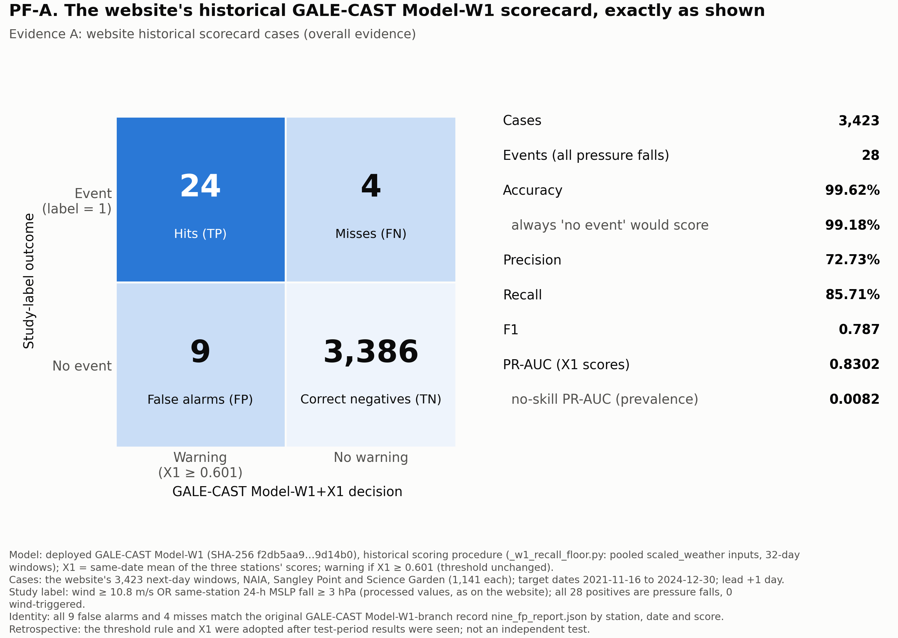
What this graph shows: A 2×2 table of GALE-CAST Model-W1+X1 warnings against study-label outcomes for Evidence A: the website's 3,423 next-day windows (NAIA, Sangley Point, Science Garden, 1,141 each; target dates 2021-11-16 to 2024-12-30).
Purpose: To show exactly the matrix the GALE-CAST website reports, and what each cell means.
How it was produced: Counts from saved historical GALE-CAST Model-W1 scores from the old scoring procedure (pooled inputs, 32-day windows, X1 = mean over the three stations, warning if X1 ≥ 0.601); case identity checked against the original GALE-CAST Model-W1-branch record of false alarms and misses.
How to read it: Top-left = hits, top-right = misses, bottom-left = false alarms, bottom-right = correct negatives. The side panel gives the derived scores and two no-skill references.
Actual finding: TP 24, FN 4, FP 9, TN 3386; accuracy 99.62% (always 'no event' scores 99.18%); precision 0.727, recall 0.857, F1 0.787, PR-AUC 0.8302 vs no-skill 0.0082.
What it supports: The website's scorecard is reproducible case by case, and GALE-CAST Model-W1+X1 caught 24 of the 28 study-label events in this cohort.
What it does not establish: Not an independent test (the threshold rule and X1 were adopted after these results were seen); all 28 events are pressure falls, not gale-force winds; accuracy is inflated by correct negatives; says nothing about numerical forecasts.
Use in the paper: Chapter 4, Model Evaluation (replace Table 4.4's description). Caption: 'Figure 4.x. Historical scorecard of the deployed model (cross-station score X1 ≥ 0.601) on 3,423 next-day cases, 2021-11-16 to 2024-12-30; all 28 positive labels are 24-hour pressure falls of at least 3 hPa.'
Source: figures/paper/PF-A_website_confusion_matrix.csv; runs w-cohort-20261024T205646Z-6b7a96, pf-20261025T160334Z-e905cc; spec/AMENDMENT_A2_website_cohort.md.
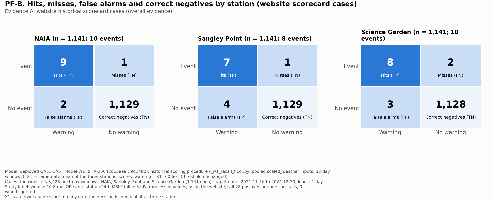
What this graph shows: One 2×2 matrix per primary station (1,141 cases each), same cohort and decisions as PF-A.
Purpose: To show whether hits and false alarms are spread across stations or concentrated at one.
How it was produced: PF-A's cases split by station; saved historical GALE-CAST Model-W1 scores from the old scoring procedure (pooled inputs, 32-day windows, X1 = mean over the three stations, warning if X1 ≥ 0.601).
How to read it: Same cell layout as PF-A; darker blue marks hits. Compare misses and false alarms between stations.
Actual finding: NAIA: 9 hits, 1 misses, 2 false alarms, 1,129 correct negatives; Sangley Point: 7 hits, 1 misses, 4 false alarms, 1,129 correct negatives; Science Garden: 8 hits, 2 misses, 3 false alarms, 1,128 correct negatives.
What it supports: Detection is similar at the three stations; no single station carries the result.
What it does not establish: X1 is one network-wide score, so the three stations always receive the same decision on a date; station results are not independent. 8-10 events per station.
Use in the paper: Chapter 4, Model Evaluation (by-station paragraph). Caption: 'Figure 4.x. Historical scorecard by primary station; the cross-station score gives one decision per date.'
Source: figures/paper/PF-B_station_outcomes.csv; run w-cohort-20261024T205646Z-6b7a96.
Same cases, simple baselines
| Procedure | Hits | Misses | False alarms | Correct neg. | Precision | Recall | F1 | F1 95% CI |
|---|---|---|---|---|---|---|---|---|
| GALE-CAST Model-W1 raw@0.64 | 20 | 8 | 7 | 3388 | 0.741 | 0.714 | 0.727 | [0.609, 0.831] |
| GALE-CAST Model-W1+X1@0.601 | 24 | 4 | 9 | 3386 | 0.727 | 0.857 | 0.787 | [0.625, 0.889] |
| GALE-CAST Model-W1+X1@0.62 | 20 | 8 | 7 | 3388 | 0.741 | 0.714 | 0.727 | [0.500, 0.857] |
| event_persistence | 7 | 21 | 21 | 3374 | 0.250 | 0.250 | 0.250 | [0.059, 0.389] |
| event_climatology@0.0355 | 12 | 16 | 267 | 3128 | 0.043 | 0.429 | 0.078 | [0.000, 0.174] |
| Paired difference (GALE-CAST Model-W1 − baseline) | 95% CI | Verdict |
|---|---|---|
| df1_X1601_persist | [0.303, 0.786] | established: positive |
| df1_raw064_persist | [0.288, 0.717] | established: positive |
| dprauc_X1_clim | [0.614, 0.938] | established: positive |
| dprauc_raw_clim | [0.535, 0.860] | established: positive |
| dbrier_X1_clim | [0.021, 0.034] | established: positive |
| dbrier_raw_clim | [0.022, 0.035] | established: positive |
Event persistence = the issue day's label. Event climatology = station × month label frequency 2015-2020, warning if ≥ 0.0355 (chosen on the tuning year only). df1 / dprauc positive = GALE-CAST Model-W1 better; dbrier positive = GALE-CAST Model-W1 worse (its scores are not calibrated: Brier skill -3.44).
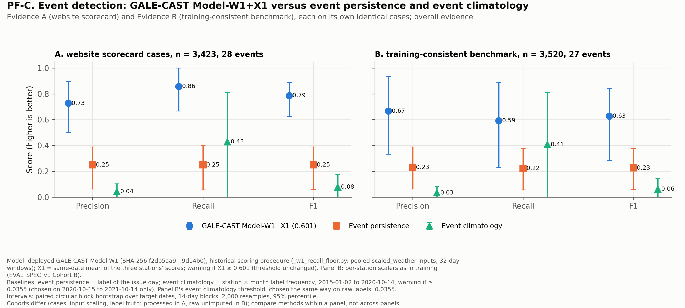
What this graph shows: Precision, recall and F1 for GALE-CAST Model-W1+X1, event persistence and event climatology, in two panels: Evidence A (3,423 cases, 28 events) and Evidence B (3,520 cases, 27 events).
Purpose: To test whether GALE-CAST Model-W1+X1 detects study-label events better than two simple reference rules on identical cases.
How it was produced: Panel A: saved historical GALE-CAST Model-W1 scores from the old scoring procedure (pooled inputs, 32-day windows, X1 = mean over the three stations, warning if X1 ≥ 0.601); panel B: Evidence B: the training-consistent benchmark (3,520 event cases / 3,555 wind cases, target dates 2021-10-15 to 2024-12-31; inputs scaled per station as in training; raw unimputed truth). Baselines: event persistence = the issue day's label; event climatology = station × month label frequency 2015-2020, warning threshold chosen on the 2020-21 tuning year. 95% intervals from a paired 14-day block bootstrap (2,000 resamples).
How to read it: Higher is better for all three scores. Vertical lines are 95% intervals; compare methods within a panel only, because the cohorts differ.
Actual finding: A: F1 GALE-CAST Model-W1+X1 0.787 vs persistence 0.250 and climatology 0.078 (GALE-CAST Model-W1 − persistence established: positive). B: F1 0.627 vs 0.226 and 0.062 (established: positive).
What it supports: On both cohorts GALE-CAST Model-W1+X1 detects pressure-fall events better than repeating yesterday's label or using the monthly event rate.
What it does not establish: The level depends on input scaling (24/28 vs 16/27 hits); 27-28 events give wide intervals; events are pressure falls, not strong winds; the cohort-A threshold rule was chosen after seeing these dates.
Use in the paper: Chapter 4, Model Evaluation, baseline comparison. Caption: 'Figure 4.x. Event detection of the deployed model against event persistence and event climatology on identical cases, (a) historical scorecard procedure, (b) training-consistent inputs; bars are 95% block-bootstrap intervals.'
Source: figures/paper/PF-C_event_metrics_overall.csv; runs w-cohort-20261024T205646Z-6b7a96, b-benchmark-20261023T162436Z-874640.
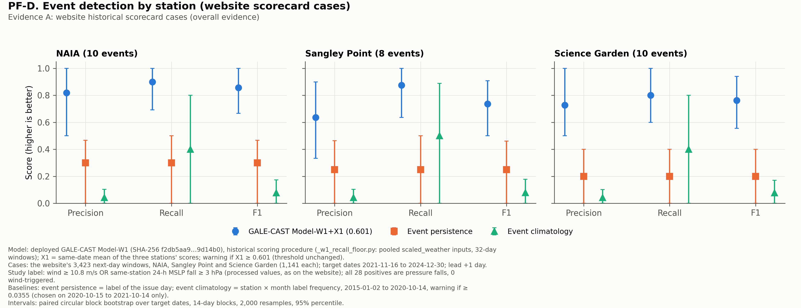
What this graph shows: PF-C's Evidence A comparison repeated for each primary station.
Purpose: To check whether GALE-CAST Model-W1+X1's advantage over the baselines appears at every station.
How it was produced: saved historical GALE-CAST Model-W1 scores from the old scoring procedure (pooled inputs, 32-day windows, X1 = mean over the three stations, warning if X1 ≥ 0.601); baselines: event persistence = the issue day's label; event climatology = station × month label frequency 2015-2020, warning threshold chosen on the 2020-21 tuning year; station-level 95% block-bootstrap intervals.
How to read it: Higher is better; overlapping intervals mean the station-level difference is uncertain.
Actual finding: F1 GALE-CAST Model-W1+X1 vs persistence: NAIA 0.857 vs 0.300; Sangley Point 0.737 vs 0.250; Science Garden 0.762 vs 0.200.
What it supports: GALE-CAST Model-W1+X1's point estimates exceed both baselines at every station.
What it does not establish: Only 8-10 events per station, so intervals are wide; decisions are shared across stations (X1).
Use in the paper: Chapter 4 or Appendix (station detail). Caption: 'Figure 4.x. Event-detection scores by station, historical scorecard cases.'
Source: figures/paper/PF-D_event_metrics_by_station.csv; run w-cohort-20261024T205646Z-6b7a96.
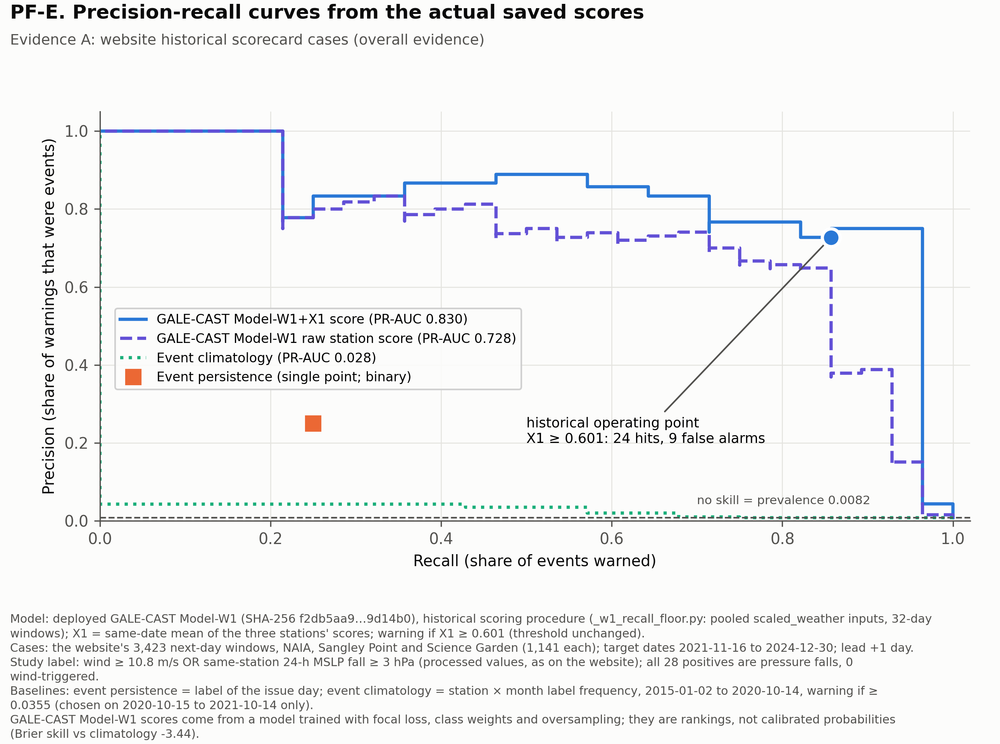
What this graph shows: Precision against recall as the warning threshold varies, for the GALE-CAST Model-W1+X1 score, the GALE-CAST Model-W1 raw station score and event climatology (Evidence A: the website's 3,423 next-day windows (NAIA, Sangley Point, Science Garden, 1,141 each; target dates 2021-11-16 to 2024-12-30)); event persistence is a single point.
Purpose: To show how GALE-CAST Model-W1 ranks event days above ordinary days at every possible threshold, not only at 0.601.
How it was produced: Curves traced from the 3,423 saved scores (not reconstructed from one confusion matrix); the historical 0.601 operating point is marked.
How to read it: Curves nearer the top-right are better. The dashed line is the no-skill level (the event rate). Steps occur because there are only 28 events.
Actual finding: PR-AUC: GALE-CAST Model-W1+X1 0.830, GALE-CAST Model-W1 raw 0.728, event climatology 0.028; no-skill 0.0082. Operating point: precision 0.727, recall 0.857.
What it supports: GALE-CAST Model-W1's scores rank pressure-fall days far above ordinary days on this cohort; cross-station averaging (X1) improves the ranking.
What it does not establish: Scores are not calibrated probabilities (Brier skill vs climatology -3.44); with training-consistent inputs the X1 PR-AUC is 0.487 (Evidence B).
Use in the paper: Chapter 4, Model Evaluation (PR-AUC paragraph). Caption: 'Figure 4.x. Precision-recall curves of the deployed model's scores on the historical scorecard cases, with the 0.601 operating point.'
Source: figures/paper/PF-E_precision_recall_curves.csv; run w-cohort-20261024T205646Z-6b7a96.
3. B. Benchmark design (declared before scoring)
The full specification is EVAL_SPEC_v1.md (JSON), committed at
7870045 2026-10-24 00:02:39 +0800 before any score. Amendment A1 (recorded before running it) added the legacy input construction to the variant comparison.
- Cohort A, legacy reproduction: the historical procedure, as written, to test whether saved counts can be reproduced.
- Cohort B, benchmark: next-day target dates 2021-10-15 to 2024-12-31; three primary stations; inputs built as in training (per-station scalers, 32 days, no recency weights); truth from raw, unimputed observations; identical cases for every method.
- Baselines: wind persistence (today's wind), wind climatology (station × month mean, 2015-01-01 to 2020-10-14); event persistence (today's label), event climatology (station × month frequency over the same years; its classification threshold chosen on the tuning year only: 0.0355).
- Thresholds (frozen): GALE-CAST Model-W1 raw 0.64 (documented max-F1 on tuning); GALE-CAST Model-W1+X1 0.601 (adopted) and 0.62 (originally declared rule).
- Uncertainty: paired circular block bootstrap over target dates, 14-day blocks, 2,000 resamples, all stations of a date resampled together. A difference is "established" only if its 95% interval excludes zero.
- Horizons: next day only. GALE-CAST Model-W1 outputs 6 of its 36 inputs, so a 2- or 3-day forecast would need a new recursive procedure inventing 30 inputs; none is produced.
4. B. Benchmark results (training-consistent inputs)
5.1 Cohort A: can the historical scorecard be reproduced?
new result The legacy scorecard (3,423 windows; TN 3386, FP 9, FN 4, TP 24; PR-AUC 0.8302) is reproduced exactly from the tracked CSVs using the legacy procedure. Neural-only next-day wind on those windows: MAE 0.987 m/s (the scorecard's 0.5365 includes post-processing fitted on the test period and is not reproduced).
Reproduction checks (run a-legacy-20261023T162426Z-b5f446)
| Check | Result |
|---|---|
| test_windows | ✔ |
| test_pos | ✔ |
| pr_auc_raw | ✔ |
| pr_auc_x1 | ✔ |
| pr_auc_tune_raw | ✔ |
| pr_auc_tune_x1 | ✔ |
| x1_0601_test | ✔ |
| x1_0601_tune | ✔ |
| raw_064_test | ✔ |
| x1_062_test | ✔ |
| rules_return_0601 | ✔ |
| maxF1_raw_064 | ✔ |
| maxF1_x1_062 | ✔ |
5.2 Wind speed, next day (identical cases)
| Scope | Method | n | MAE m/s | MAE 95% CI | RMSE m/s | Bias m/s |
|---|---|---|---|---|---|---|
| pooled | GALE-CAST Model-W1 | 3520 | 1.021 | [0.987, 1.060] | 1.223 | 0.304 |
| persistence | 3520 | 0.467 | [0.436, 0.498] | 0.791 | -0.001 | |
| climatology | 3520 | 0.584 | [0.549, 0.623] | 0.795 | 0.023 | |
| NAIA | GALE-CAST Model-W1 | 1174 | 0.739 | [0.675, 0.815] | 0.962 | -0.283 |
| persistence | 1174 | 0.525 | [0.478, 0.572] | 0.845 | 0.000 | |
| climatology | 1174 | 0.686 | [0.626, 0.750] | 0.912 | 0.079 | |
| Sangley Point | GALE-CAST Model-W1 | 1172 | 0.823 | [0.758, 0.901] | 1.050 | -0.308 |
| persistence | 1172 | 0.663 | [0.612, 0.716] | 0.967 | -0.003 | |
| climatology | 1172 | 0.728 | [0.677, 0.789] | 0.946 | -0.090 | |
| Science Garden | GALE-CAST Model-W1 | 1174 | 1.501 | [1.461, 1.543] | 1.568 | 1.500 |
| persistence | 1174 | 0.215 | [0.181, 0.250] | 0.480 | 0.000 | |
| climatology | 1174 | 0.339 | [0.318, 0.361] | 0.410 | 0.081 |
| Scope | Difference in MAE | Point | 95% CI | Verdict |
|---|---|---|---|---|
| pooled | GALE-CAST Model-W1 − persistence | 0.554 | [0.518, 0.595] | established: GALE-CAST Model-W1 worse |
| pooled | GALE-CAST Model-W1 − climatology | 0.437 | [0.411, 0.463] | established: GALE-CAST Model-W1 worse |
| NAIA | GALE-CAST Model-W1 − persistence | 0.214 | [0.160, 0.281] | established: GALE-CAST Model-W1 worse |
| NAIA | GALE-CAST Model-W1 − climatology | 0.053 | [0.001, 0.111] | established: GALE-CAST Model-W1 worse |
| Sangley Point | GALE-CAST Model-W1 − persistence | 0.160 | [0.094, 0.236] | established: GALE-CAST Model-W1 worse |
| Sangley Point | GALE-CAST Model-W1 − climatology | 0.095 | [0.058, 0.134] | established: GALE-CAST Model-W1 worse |
| Science Garden | GALE-CAST Model-W1 − persistence | 1.286 | [1.218, 1.353] | established: GALE-CAST Model-W1 worse |
| Science Garden | GALE-CAST Model-W1 − climatology | 1.162 | [1.106, 1.217] | established: GALE-CAST Model-W1 worse |
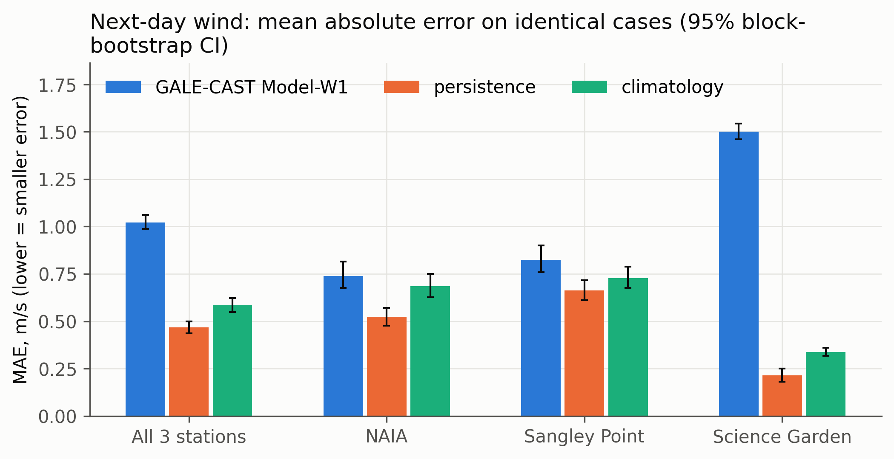
What this graph shows: Next-day wind MAE (m/s) by station for GALE-CAST Model-W1, persistence and climatology on 3,520 identical Evidence B cases.
Purpose: To test GALE-CAST Model-W1's wind forecast against two references with training-consistent inputs.
How it was produced: Evidence B: the training-consistent benchmark (3,520 event cases / 3,555 wind cases, target dates 2021-10-15 to 2024-12-31; inputs scaled per station as in training; raw unimputed truth); persistence = the issue day's observation; climatology = station × calendar-month mean of 2015-01-01 to 2020-10-14 observations; 95% block-bootstrap intervals.
How to read it: Lower is better. Lower MAE/RMSE means smaller errors on these matching cases. Signed mean error (bias) shows systematic over- or under-forecasting and can hide errors that cancel. A good confusion matrix does not establish accurate numerical wind forecasts.
Actual finding: Pooled MAE GALE-CAST Model-W1 1.021, persistence 0.467, climatology 0.584 m/s.
What it supports: With training-consistent inputs too, GALE-CAST Model-W1's wind forecast is less accurate than both references.
What it does not establish: No day reached 10.8 m/s, so strong-wind accuracy is untested.
Use in the paper: Chapter 4, regression results (training-consistent benchmark). Caption: 'Figure 4.x. Next-day wind MAE on the training-consistent benchmark.'
Source: data/F2_wind_mae_by_station.csv; run b-benchmark-20261023T162436Z-874640.
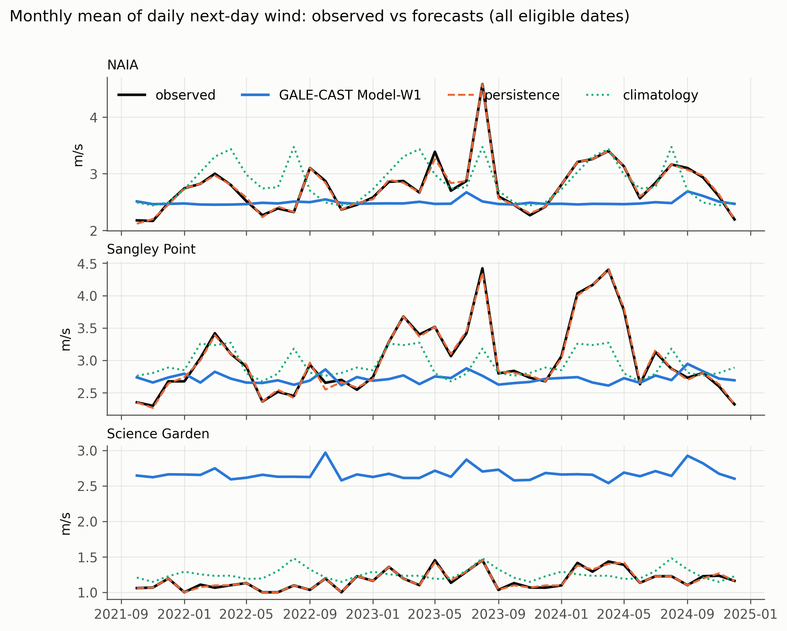
What this graph shows: Monthly means of observed wind and of each forecast, per station, over the whole Evidence B period (no dates selected).
Purpose: To show whether GALE-CAST Model-W1 follows seasonal and station differences in wind.
How it was produced: Daily Evidence B values averaged within each calendar month.
How to read it: A good forecast line follows the observed line; a flat line means the forecast ignores seasons.
Actual finding: GALE-CAST Model-W1 stays near 2.5 m/s at every station (forecast SD 0.27 vs observed 1.16 m/s) and is far too high at Science Garden.
What it supports: GALE-CAST Model-W1's wind output barely varies with season or station.
What it does not establish: Monthly averaging hides day-to-day behaviour.
Use in the paper: Appendix (regression diagnostics). Caption: 'Figure A.x. Monthly mean observed and forecast wind by station.'
Source: data/wind_monthly_means_by_station.csv; run b-benchmark-20261023T162436Z-874640.
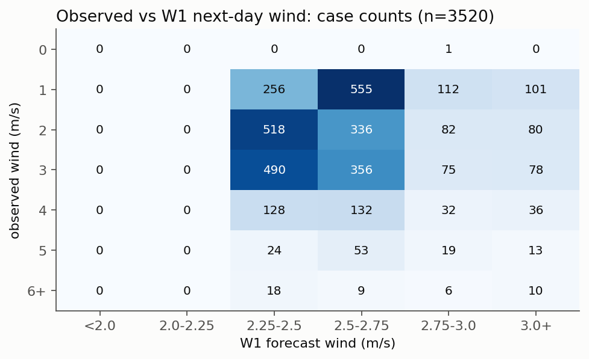
What this graph shows: Counts of Evidence B cases by observed-wind bin and GALE-CAST Model-W1-forecast bin.
Purpose: To show the range of GALE-CAST Model-W1's wind forecasts relative to observations.
How it was produced: Binned counts of all Evidence B wind cases.
How to read it: Cases on the diagonal are accurate; a single row means the forecast hardly changes.
Actual finding: GALE-CAST Model-W1 never forecasts below about 2.25 m/s while observed winds range from 0 to above 6 m/s.
What it supports: GALE-CAST Model-W1's wind forecasts occupy a narrow band regardless of the observation.
What it does not establish: Does not show why (the audit points to the wind target's small share of the training loss and per-station scaling).
Use in the paper: Appendix. Caption: 'Figure A.x. Observed versus forecast wind (counts), training-consistent benchmark.'
Source: data/F4_wind_obs_vs_pred_counts.csv; run fig-20261025T160326Z-6475dd.
5.3 Events (study label: wind ≥ 10.8 m/s or pressure fall ≥ 3 hPa), identical cases
3,520 cases, 27 events (prevalence 0.0077); every event is a pressure fall; no wind event; no gale-force day.
| Procedure | Hits | Misses | False alarms | Correct negatives | Accuracy | Precision | 95% CI | Recall | 95% CI | F1 | 95% CI |
|---|---|---|---|---|---|---|---|---|---|---|---|
| GALE-CAST Model-W1 raw@0.64 | 11 | 16 | 20 | 3473 | 0.9898 | 0.355 | [0.100, 0.567] | 0.407 | [0.143, 0.667] | 0.379 | [0.120, 0.556] |
| GALE-CAST Model-W1+X1@0.601 | 16 | 11 | 8 | 3485 | 0.9946 | 0.667 | [0.333, 0.933] | 0.593 | [0.231, 0.889] | 0.627 | [0.285, 0.839] |
| GALE-CAST Model-W1+X1@0.62 | 10 | 17 | 8 | 3485 | 0.9929 | 0.556 | [0.200, 0.833] | 0.370 | [0.087, 0.633] | 0.444 | [0.125, 0.634] |
| event_persistence | 6 | 21 | 20 | 3473 | 0.9884 | 0.231 | [0.062, 0.389] | 0.222 | [0.056, 0.375] | 0.226 | [0.059, 0.375] |
| event_climatology@0.0355 | 11 | 16 | 317 | 3176 | 0.9054 | 0.034 | [0.000, 0.082] | 0.407 | [0.000, 0.813] | 0.062 | [0.000, 0.143] |
| Probabilistic score | PR-AUC | 95% CI | Brier | Brier skill vs climatology |
|---|---|---|---|---|
| GALE-CAST Model-W1 raw | 0.355 | [0.143, 0.617] | 0.0358 | -3.74 |
| GALE-CAST Model-W1+X1 | 0.487 | [0.215, 0.788] | 0.0287 | -2.80 |
| event_climatology | 0.022 | [0.004, 0.061] | 0.0076 | 0.00 |
| W1_raw_legacy_inputs | 0.717 | [0.534, 0.871] | 0.0362 | -3.79 |
| GALE-CAST Model-W1+X1_legacy_inputs | 0.824 | [0.624, 0.952] | 0.0351 | -3.64 |
PR-AUC with no skill equals the prevalence (0.0077). Brier skill below 0 means worse than climatology: GALE-CAST Model-W1's scores are not calibrated probabilities.
| Paired difference | 95% CI | Verdict |
|---|---|---|
| df1_X1601_persist | [0.109, 0.611] | established: positive |
| df1_raw064_persist | [-0.106, 0.368] | no established difference |
| dprauc_X1_clim | [0.197, 0.759] | established: positive |
| dprauc_raw_clim | [0.119, 0.594] | established: positive |
| dbrier_X1_clim | [0.016, 0.026] | established: positive |
| dbrier_raw_clim | [0.023, 0.034] | established: positive |
df1 = F1 difference (positive: GALE-CAST Model-W1 better); dprauc = PR-AUC difference (positive: GALE-CAST Model-W1 better); dbrier = Brier difference (positive: GALE-CAST Model-W1 worse).
By station (GALE-CAST Model-W1+X1 at 0.601; hits/false alarms/misses)
| Station | Events | GALE-CAST Model-W1+X1 H/FA/M | GALE-CAST Model-W1+X1 F1 | Persistence H/FA/M | GALE-CAST Model-W1+X1 PR-AUC |
|---|---|---|---|---|---|
| NAIA | 10 | 6/2/4 | 0.667 | 3/7/7 | 0.634 |
| Sangley Point | 7 | 5/3/2 | 0.667 | 1/5/6 | 0.456 |
| Science Garden | 10 | 5/3/5 | 0.556 | 2/8/8 | 0.458 |
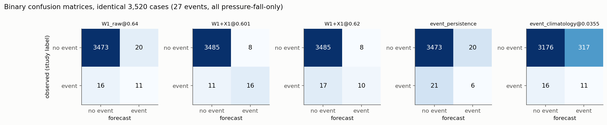
What this graph shows: 2×2 matrices with correct negatives for every Evidence B procedure on the same 3,520 cases.
Purpose: To compare the warning burden (misses vs false alarms) of GALE-CAST Model-W1 and the baselines.
How it was produced: Evidence B: the training-consistent benchmark (3,520 event cases / 3,555 wind cases, target dates 2021-10-15 to 2024-12-31; inputs scaled per station as in training; raw unimputed truth); frozen thresholds (GALE-CAST Model-W1 raw 0.64, GALE-CAST Model-W1+X1 0.601/0.62); event persistence = the issue day's label; event climatology = station × month label frequency 2015-2020, warning threshold chosen on the 2020-21 tuning year.
How to read it: Each matrix sums to the case count; compare hits against false alarms.
Actual finding: GALE-CAST Model-W1+X1 at 0.601: 16 hits, 11 misses, 8 false alarms; event persistence 6 hits, 20 false alarms.
What it supports: With training-consistent inputs GALE-CAST Model-W1+X1 at 0.601 still has the highest F1 of the procedures shown.
What it does not establish: Fewer hits than the historical scorecard (16 vs 24); events are pressure falls.
Use in the paper: Chapter 4, baseline comparison (training-consistent). Caption: 'Figure 4.x. Confusion matrices of all procedures on the training-consistent benchmark.'
Source: data/F6_confusion_matrices.csv; run b-benchmark-20261023T162436Z-874640.
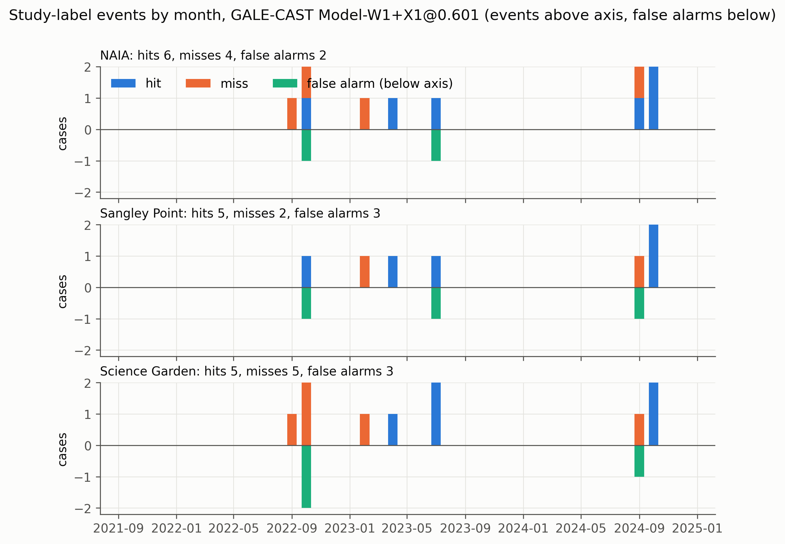
What this graph shows: Monthly counts of hits, misses and false alarms per station for GALE-CAST Model-W1+X1 at 0.601 (Evidence B).
Purpose: To show when events and errors happened, without publishing exact dates.
How it was produced: Evidence B decisions aggregated by month; totals equal the PF-C panel B matrix.
How to read it: Bars above the axis are hits and misses; below are false alarms.
Actual finding: Events cluster in a few storm months; 27 events in total, all pressure falls.
What it supports: Results rest on a small number of episodes.
What it does not establish: Monthly counts cannot show lead-time behaviour; events are not independent.
Use in the paper: Appendix. Caption: 'Figure A.x. Monthly event outcomes by station, training-consistent benchmark.'
Source: data/event_outcomes_monthly_by_station.csv; run b-benchmark-20261023T162436Z-874640.
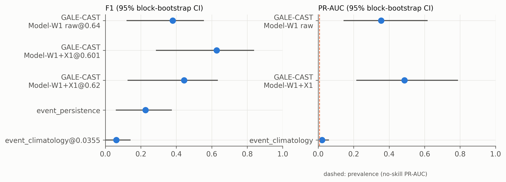
What this graph shows: F1 and PR-AUC with 95% intervals for GALE-CAST Model-W1 and the event baselines (Evidence B).
Purpose: To show how certain the event-detection comparison is.
How it was produced: Paired circular block bootstrap over target dates (14-day blocks, 2,000 resamples).
How to read it: Higher is better; wide intervals mean uncertain values.
Actual finding: GALE-CAST Model-W1+X1 F1 0.627 vs persistence 0.226 (established: positive); PR-AUC 0.487 vs climatology 0.022.
What it supports: GALE-CAST Model-W1+X1 ranks pressure-fall days better than both baselines on training-consistent inputs.
What it does not establish: 27 events make intervals wide; no precise level of skill is established.
Use in the paper: Chapter 4, baseline comparison. Caption: 'Figure 4.x. Event-detection scores with 95% block-bootstrap intervals, training-consistent benchmark.'
Source: data/F7_event_benchmarks.csv; run b-benchmark-20261023T162436Z-874640.
5.4 Declared sensitivities
- S-LEGACY inputs (pooled scaling, as in the historical scorecard) on the same cases: GALE-CAST Model-W1+X1 PR-AUC 0.824; at 0.601: 23 hits, 9 false alarms, 4 misses. Wind MAE 0.982 m/s.
- S-NOIMPUTE (remove windows with imputed values): 3,442 event cases, 26 events; GALE-CAST Model-W1+X1 at 0.601: 16 hits, 8 false alarms; wind MAE GALE-CAST Model-W1 1.027, persistence 0.462.
By target year (point estimates)
| Year | Wind n | GALE-CAST Model-W1 MAE | Persistence MAE | Climatology MAE | Events | GALE-CAST Model-W1+X1 hits/FA | Persistence hits/FA |
|---|---|---|---|---|---|---|---|
| 2021 | 234 | 0.889 | 0.329 | 0.455 | 0 | 0/0 | 0/0 |
| 2022 | 1093 | 0.965 | 0.395 | 0.534 | 7 | 2/4 | 1/5 |
| 2023 | 1095 | 1.033 | 0.479 | 0.605 | 10 | 7/2 | 1/9 |
| 2024 | 1098 | 1.093 | 0.557 | 0.640 | 10 | 7/2 | 4/6 |
5.5 Post-hoc diagnostics (explain; select nothing)
new result Swapping one input factor at a time (run diag-inputs-20261023T162554Z-f5aef8): per-station vs pooled scaling changes GALE-CAST Model-W1+X1 PR-AUC from
0.487 to 0.824; cross-station columns and passthrough flags change nothing.
On GALE-CAST Model-W1's own training-period windows (run diag-insample-20261023T162608Z-7618ef) per-station scaling fits better (raw PR-AUC 0.688 vs 0.610), consistent with the code's statement that training used per-station scalers;
on the tuning year the order reverses (0.513 vs 0.955).
interpretation One possible explanation, not established: every historical selection (GALE-CAST Model-W1 among its variants, X1, the threshold rule) was made on pooled-input scores over these same periods, which would favour whatever works best under pooled inputs. The mechanism has not been identified. Report both constructions; do not quote either alone.
5. Regression evidence: what the numbers really are
Evidence A The website's regression block (wind MAE 0.5365 m/s, RMSE 0.7723, MASE 0.6782) was traced to
validate_model_multioutput.py at GALE-CAST Model-W1 commit 1fd1ef9 and reproduced exactly (run reg-prov-20261024T205749Z-ce57af). It is not
GALE-CAST Model-W1's own output: isotonic MOS and a persistence blend were fitted on the same evaluation period. Chapter 4's Table 4.5 (2.04 km/h) is the same
pipeline on the model before GALE-CAST Model-W1, and its wind-direction row comes from a separate direction-only model.
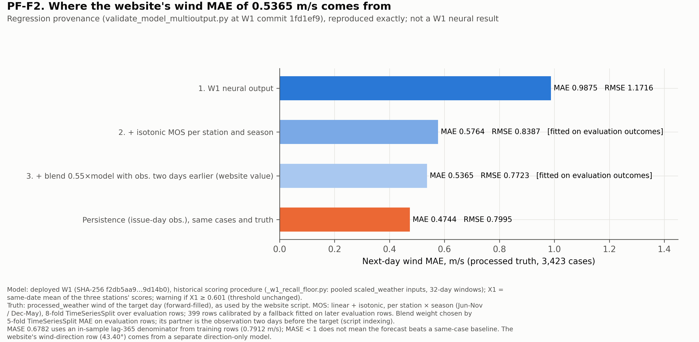
What this graph shows: How the website's wind MAE of 0.5365 m/s arises: GALE-CAST Model-W1's own error, then two post-processing steps, beside persistence on the same 3,423 cases.
Purpose: To show which procedure produced the website's regression numbers before they are attributed to GALE-CAST Model-W1.
How it was produced: Port of validate_model_multioutput.py at GALE-CAST Model-W1 commit 1fd1ef9 (isotonic MOS per station × season, then a persistence blend), run on the saved website cases; truth = processed (forward-filled) wind, as in that script.
How to read it: Shorter bars are smaller errors. Bars marked 'fitted on evaluation outcomes' used the same period's observations to tune themselves.
Actual finding: GALE-CAST Model-W1 neural 0.9875 → after MOS 0.5764 → after blend 0.5365 (website value reproduced exactly); persistence 0.4744 m/s.
What it supports: The website's regression block is post-processed, partly in-sample, and still has a larger MAE than persistence (its RMSE is slightly lower).
What it does not establish: Not a GALE-CAST Model-W1 result and not an out-of-sample estimate; the blend uses an observation two days before the target (script indexing). MASE < 1 here uses an in-sample denominator.
Use in the paper: Chapter 4, note under the regression results, or Appendix. Caption: 'Figure 4.x. Provenance of the previously reported wind error: model output, in-period calibration and blending, and same-case persistence.'
Source: figures/paper/PF-F2_website_regression_provenance.csv; run reg-prov-20261024T205749Z-ce57af.
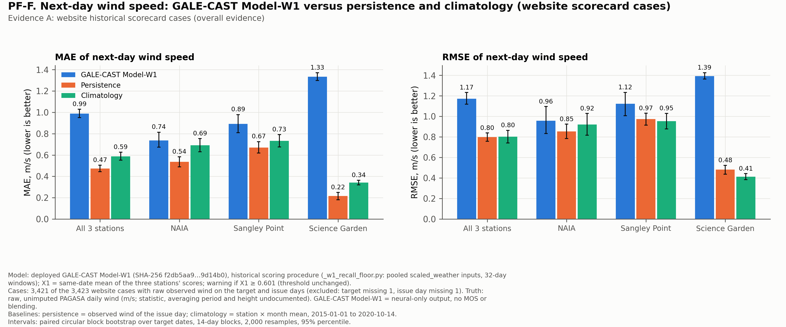
What this graph shows: Mean absolute error and root-mean-square error (m/s) of next-day wind for GALE-CAST Model-W1, persistence and climatology, pooled and per station (3,421 of the 3,423 Evidence A cases).
Purpose: To test whether GALE-CAST Model-W1's numerical wind forecast is more accurate than two no-skill references.
How it was produced: GALE-CAST Model-W1 neural-only wind output on the website cases (no post-processing); raw unimputed observed wind; persistence = the issue day's observation; climatology = station × calendar-month mean of 2015-01-01 to 2020-10-14 observations; 95% block-bootstrap intervals.
How to read it: Lower bars are better. Lower MAE/RMSE means smaller errors on these matching cases. Signed mean error (bias) shows systematic over- or under-forecasting and can hide errors that cancel. A good confusion matrix does not establish accurate numerical wind forecasts.
Actual finding: Pooled MAE: GALE-CAST Model-W1 0.987, persistence 0.474, climatology 0.588 m/s; GALE-CAST Model-W1 bias 0.17 m/s. Science Garden: GALE-CAST Model-W1 1.334 vs persistence 0.216.
What it supports: GALE-CAST Model-W1's wind forecast is less accurate than persistence at every station and less accurate than climatology overall.
What it does not establish: Says nothing about event detection (PF-C) or about strong winds (none reached 10.8 m/s); the wind statistic, averaging period and sensor height are undocumented.
Use in the paper: Chapter 4, regression results (replacing Table 4.5). Caption: 'Figure 4.x. Next-day wind-speed error of the deployed model and two reference forecasts on identical cases.'
Source: figures/paper/PF-F_wind_mae_rmse.csv; run w-cohort-20261024T205646Z-6b7a96.
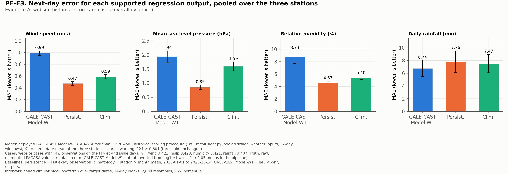
What this graph shows: Pooled MAE of GALE-CAST Model-W1, persistence and climatology for each regression output in its own unit and panel: wind (m/s), MSLP (hPa), humidity (%), rainfall (mm).
Purpose: To check every supported regression output, not only wind, against the same references.
How it was produced: GALE-CAST Model-W1 neural-only outputs on Evidence A cases with complete raw observations; rainfall inverted from log1p to mm; persistence = the issue day's observation; climatology = station × calendar-month mean of 2015-01-01 to 2020-10-14 observations; 95% block-bootstrap intervals.
How to read it: Lower is better within each panel; panels have different units and must not be compared with each other. Lower MAE/RMSE means smaller errors on these matching cases. Signed mean error (bias) shows systematic over- or under-forecasting and can hide errors that cancel. A good confusion matrix does not establish accurate numerical wind forecasts.
Actual finding: GALE-CAST Model-W1 vs persistence vs climatology MAE: wind 0.99/0.47/0.59; MSLP 1.94/0.85/1.59; humidity 8.73/4.63/5.40; rainfall 6.74/7.76/7.47 (rainfall RMSE GALE-CAST Model-W1 17.1 vs climatology 16.1; GALE-CAST Model-W1 bias -3.66 mm).
What it supports: Rainfall is the only output where GALE-CAST Model-W1's MAE is lower than both references; for wind, pressure and humidity persistence is better.
What it does not establish: The rainfall MAE advantage comes with under-forecasting and a higher RMSE than climatology; a skewed variable can reward low forecasts on MAE.
Use in the paper: Chapter 4, regression results table/figure. Caption: 'Figure 4.x. Next-day error of each regression output of the deployed model and two reference forecasts (separate units).'
Source: figures/paper/PF-F3_regression_variables_mae.csv; run w-cohort-20261024T205646Z-6b7a96.
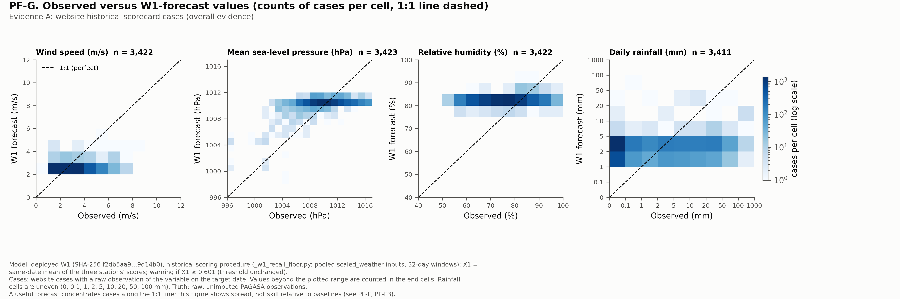
What this graph shows: For wind, MSLP, humidity and rainfall: the number of Evidence A cases in each observed-value bin (x) and GALE-CAST Model-W1-forecast bin (y), with the 1:1 line.
Purpose: To show the shape of GALE-CAST Model-W1's numerical errors (spread, bias, range) without publishing individual readings.
How it was produced: Counts of saved GALE-CAST Model-W1 neural outputs against raw observations on the website cases; values outside the plotted range are counted in the end cells; rainfall cells are uneven.
How to read it: Cells on the dashed 1:1 line are perfect forecasts; a horizontal band means the forecast hardly changes when the observation changes. Darker = more cases (log scale).
Actual finding: Most wind forecasts sit at 2-3 m/s whatever was observed; humidity forecasts stay near 75-90%; pressure forecasts follow higher pressures but stay too high on low-pressure days; rainfall forecasts sit at 1-5 mm, too wet on dry days and too dry on wet days.
What it supports: GALE-CAST Model-W1's regression outputs vary much less than the observations; this explains the larger errors in PF-F and PF-F3.
What it does not establish: Shows spread, not skill relative to baselines; binning hides exact values.
Use in the paper: Chapter 4 or Appendix (regression diagnostics). Caption: 'Figure 4.x. Observed versus forecast values of the deployed model (case counts per cell; dashed line = perfect forecast).'
Source: figures/paper/PF-G_observed_vs_predicted.csv; run w-cohort-20261024T205646Z-6b7a96.
6. C. Selected illustrative case studies
Two separately recorded selections. Neither is a performance estimate; the overall comparisons (Sections A, B and the regression evidence) are the basis for any claim. Each date shows its own next-day forecast, issued after the previous day's observations; the three dates are not a +1/+2/+3-day forecast from one origin.
Selected station plots are available below as PNG, SVG and CSV for panel review. Each plot shows three separate next-day forecasts.
Set 1: warning behaviour around detected events
Criteria committed before selection (CASE_SELECTION_v1.md): from the 24 hits, three consecutive target dates with complete raw wind and pressure observations and a raw-confirmed event; ranked by correct GALE-CAST Model-W1 decisions in the window (chosen for correct warnings, disclosed), then pressure fall, then date. GALE-CAST Model-W1's numerical error was not used. 22 of 24 candidates passed.
| Station | Event trigger | GALE-CAST Model-W1+X1 outcomes (day before, event, day after) | Event persistence on the event day | Eligible candidates |
|---|---|---|---|---|
| NAIA | pressure fall | Hit, Hit, Correct negative | warning | 9 |
| Sangley Point | pressure fall | Correct negative, Hit, Correct negative | no warning | 5 |
| Science Garden | pressure fall | Correct negative, Hit, Correct negative | no warning | 8 |
A classification success is not a regression success. In these windows GALE-CAST Model-W1+X1 warned correctly on every day, but GALE-CAST Model-W1's wind forecast was closer than both baselines on only 3 of the 9 station-days.

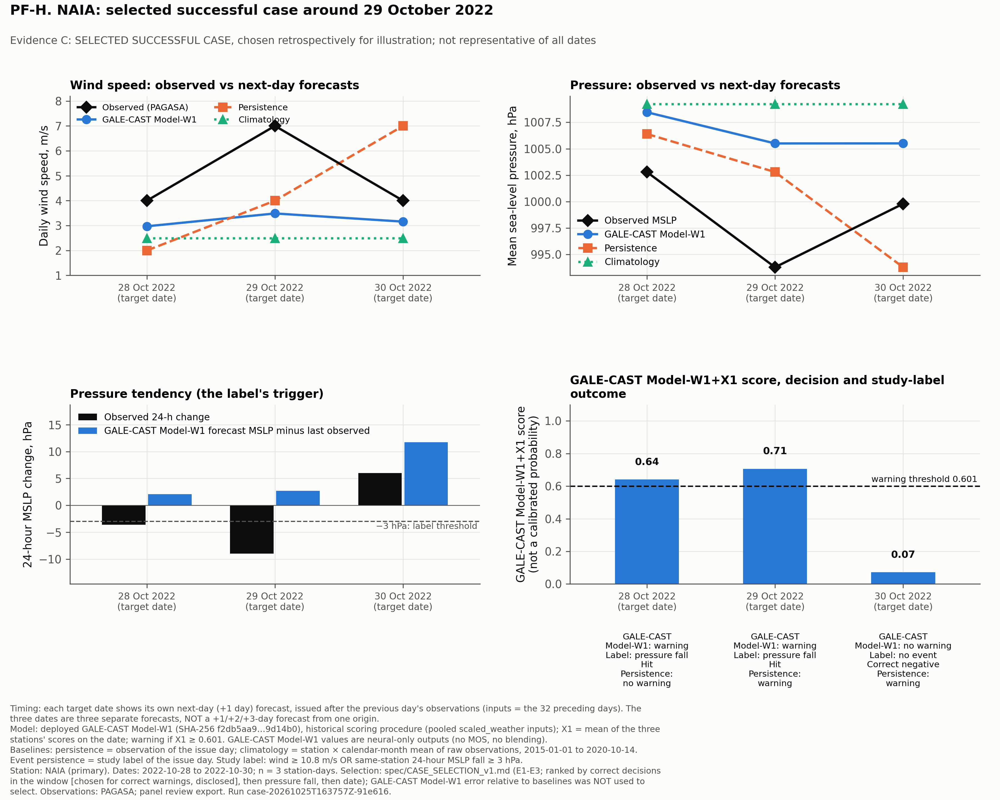


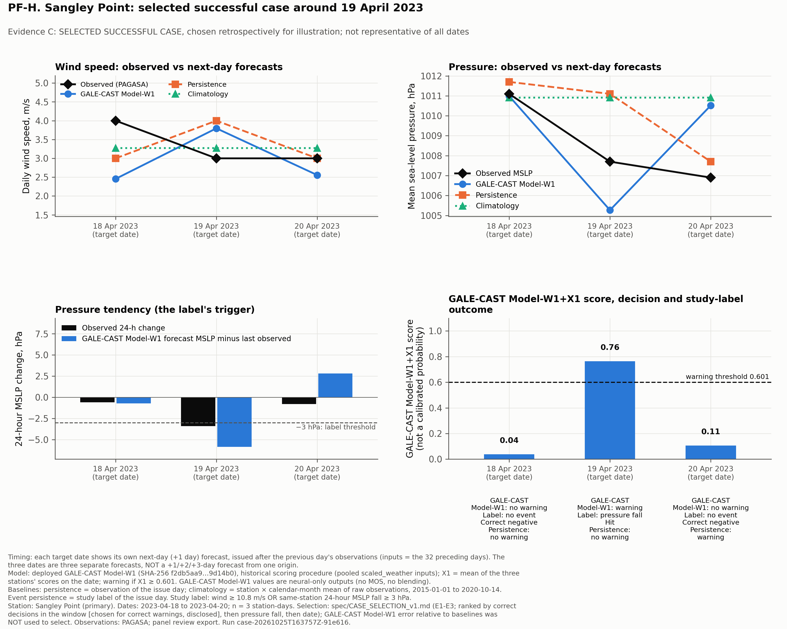


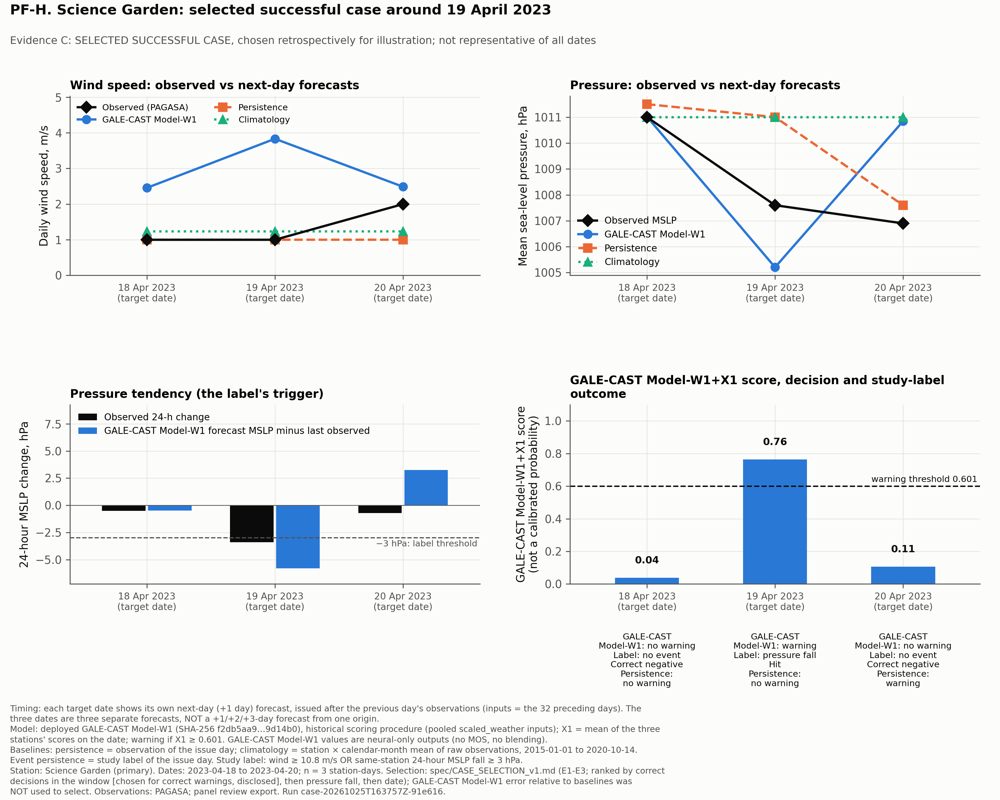

What this graph shows: Per station (one figure each), three consecutive target dates around a detected event: observed wind and the three wind forecasts; observed and forecast MSLP; observed 24-hour MSLP change and GALE-CAST Model-W1's implied change; the GALE-CAST Model-W1+X1 score, decision and outcome.
Purpose: To explain how GALE-CAST Model-W1 behaved around a correctly detected pressure-fall event. Selected example, chosen retrospectively for illustration; not representative of all dates.
How it was produced: Selection v1 (spec/CASE_SELECTION_v1.md): from the 24 hits, complete raw records, raw-confirmed event, ranked by correct decisions in the window (chosen for correct warnings), then pressure fall, then date. Saved Evidence A values; no model run.
How to read it: Black diamonds are observations; blue GALE-CAST Model-W1, orange persistence, green climatology. In the score panel the dashed line is the 0.601 warning threshold. Each date is a separate next-day forecast.
Actual finding: Outcomes (day before, event, day after): NAIA: Hit, Hit, Correct negative; Sangley Point: Correct negative, Hit, Correct negative; Science Garden: Correct negative, Hit, Correct negative. All events were pressure-triggered. GALE-CAST Model-W1's wind error was smaller than both baselines on 2 of 3 NAIA dates (not the event day), on 0 of 3 Sangley Point dates and on 1 of 3 Science Garden dates.
What it supports: GALE-CAST Model-W1+X1 warned on the event days and stayed quiet on the neighbouring non-event days in these windows.
What it does not establish: Selected for correct decisions; a classification success is not a regression success (the wind errors vary across the three forecasts); three dates cannot show general superiority.
Use in the paper: Chapter 4, new subsection 'Selected illustrative case studies' (thesis and panel-review site). Caption: 'Figure 4.x. Selected illustrative case: next-day forecasts for three consecutive target dates around a correctly detected pressure-fall event. Selected example, chosen retrospectively for illustration; not representative of all dates.'
Source: panel-review PNG/SVG/CSV: docs/figures/paper/; source archive: _private/thesis_export/case-20261025T163757Z-91e616/; public summary: runs/case-20261025T163757Z-91e616/case_selection_summary.json.

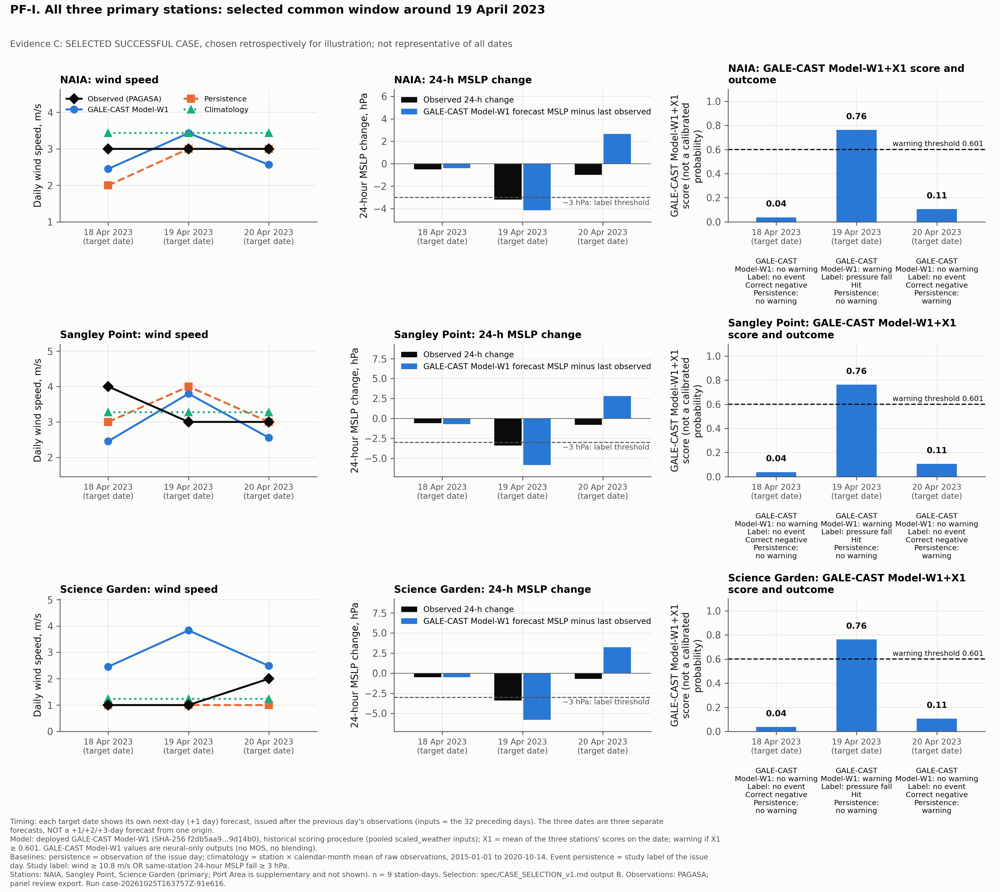

What this graph shows: The three primary stations on the same three target dates: wind, 24-hour MSLP change and the GALE-CAST Model-W1+X1 score/outcome per station.
Purpose: An overall view of one event across the network. Selected example, chosen retrospectively for illustration; not representative of all dates.
How it was produced: Selection v1, output B (a date detected at all three stations).
How to read it: One row per station; same colours as PF-H.
Actual finding: Correct decisions in the window: 9 of 9 station-days; all three stations triggered by a pressure fall on the event day.
What it supports: X1 warned all three stations on the event date and none on the neighbouring days.
What it does not establish: Same as PF-H; X1 gives one shared decision, so the three rows are not independent.
Use in the paper: Chapter 4, selected case studies. Caption: 'Figure 4.x. Selected common window across the three primary stations. Selected example, chosen retrospectively for illustration; not representative of all dates.'
Source: panel-review PNG/SVG/CSV: docs/figures/paper/; source archive: _private/thesis_export/case-20261025T163757Z-91e616/.
Set 2: regression example chosen for low model error (panel request)
Criteria recorded before the search (CASE_SELECTION_v2_regression.md): complete raw wind, pressure, humidity and rainfall; observed wind at or above the station's 2015-2020 90th percentile on at least one day (NAIA 4 m/s, Sangley Point 4 m/s, Science Garden 2 m/s); windows with a detected event first; ranked by the number of days on which GALE-CAST Model-W1's wind error was smaller than both baselines. These dates were chosen because the model's error was low. Other variables were reported, not used to select.
| Station | Higher-wind windows | …with a detected event and ≥1 GALE-CAST Model-W1 wind win | Selected | Days GALE-CAST Model-W1 closest (of 3) by variable | GALE-CAST Model-W1+X1 outcomes |
|---|---|---|---|---|---|
| NAIA | 332 | 13 | Tier 1 | wind 3/3 · mslp 0/3 · humidity 1/3 · rainfall 1/3 | Correct negative, Hit, Correct negative |
| Sangley Point | 518 | 10 | Tier 1 | wind 3/3 · mslp 1/3 · humidity 1/3 · rainfall 2/3 | Correct negative, Miss, Hit |
| Science Garden | 406 | 9 | Tier 1 | wind 1/3 · mslp 1/3 · humidity 1/3 · rainfall 1/3 | Miss, False alarm, Hit |
Common window: GALE-CAST Model-W1's wind was closest on 5 of 9 station-days.

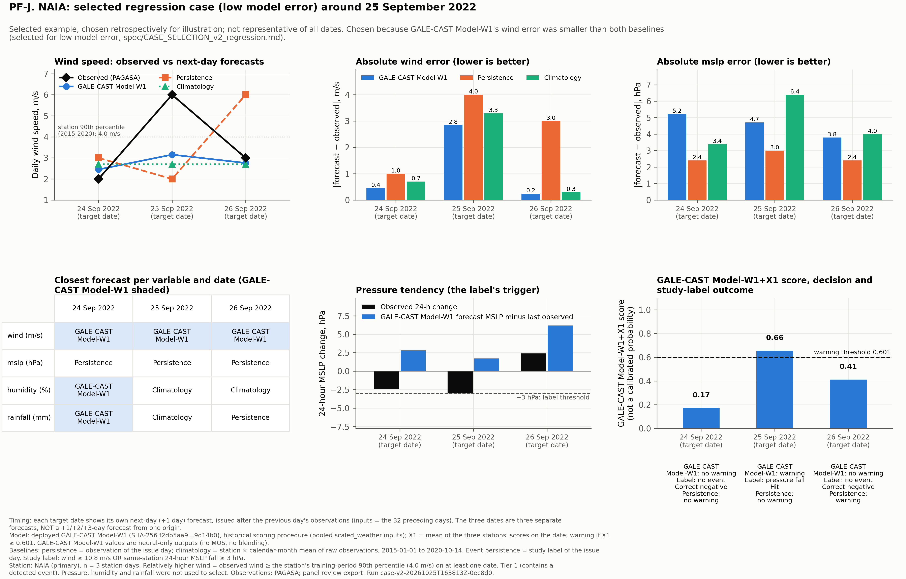


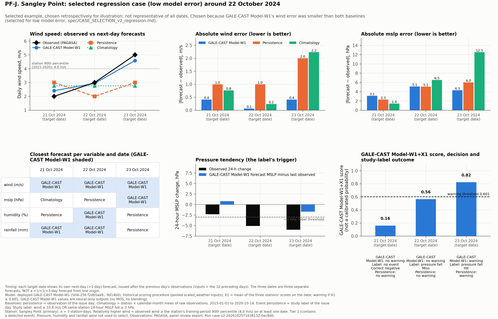


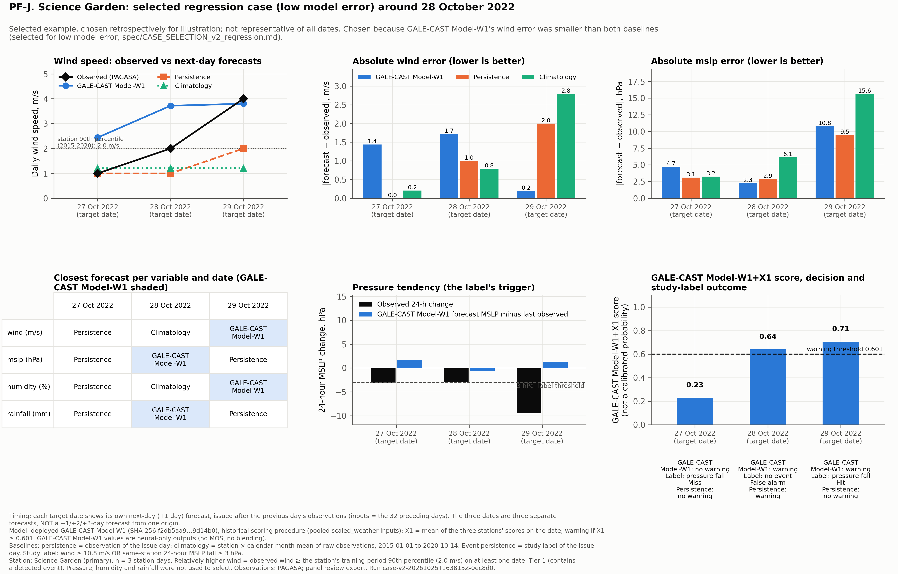

What this graph shows: Per station, three consecutive target dates with relatively high observed wind: observed and forecast wind, absolute wind and MSLP errors, a 'closest forecast' grid for wind/MSLP/humidity/rainfall, 24-hour MSLP change, and the GALE-CAST Model-W1+X1 outcome.
Purpose: The panel's request: an example with stronger observed weather where GALE-CAST Model-W1's numbers were good. Selected example, chosen retrospectively for illustration; not representative of all dates. Chosen because GALE-CAST Model-W1's wind error was smaller than both baselines (selected for low model error).
How it was produced: Selection v2 (spec/CASE_SELECTION_v2_regression.md), recorded before the search: complete raw records d−2..d+1 for four variables; observed wind ≥ the station's 2015-2020 90th percentile on at least one date; windows with a detected event first; ranked by dates on which GALE-CAST Model-W1's wind error beat both baselines, then margin, then wind, then date.
How to read it: Error bars: shorter is better. The grid names the closest forecast per variable and date (GALE-CAST Model-W1 shaded). Each date is a separate next-day forecast.
Actual finding: GALE-CAST Model-W1 wind beat both baselines on NAIA 3/3 dates (MSLP 0, humidity 1, rainfall 1); Sangley Point 3/3 dates (MSLP 1, humidity 1, rainfall 2); Science Garden 1/3 dates (MSLP 1, humidity 1, rainfall 1). Outcomes: NAIA Correct negative, Hit, Correct negative; Sangley Point Correct negative, Miss, Hit; Science Garden Miss, False alarm, Hit.
What it supports: On selected dates with relatively strong wind, GALE-CAST Model-W1's wind forecast can be closer than both references.
What it does not establish: Chosen for low GALE-CAST Model-W1 wind error; does not hold for pressure in these windows; Science Garden's '90th percentile' is only 2 m/s and its window has 1 wind win, a miss and a false alarm; overall GALE-CAST Model-W1 wind error is larger than persistence (PF-F).
Use in the paper: Chapter 4, selected case studies (separate from PF-H). Caption: 'Figure 4.x. Selected regression example: three consecutive next-day wind forecasts during relatively strong wind. Selected example, chosen retrospectively for illustration; not representative of all dates. Selected for low model wind error.'
Source: panel-review PNG/SVG/CSV: docs/figures/paper/; source archive: _private/thesis_export/case-v2-20261025T163813Z-0ec8d0/; public counts: runs/case-v2-20261025T163813Z-0ec8d0/case_selection_v2_summary.json.

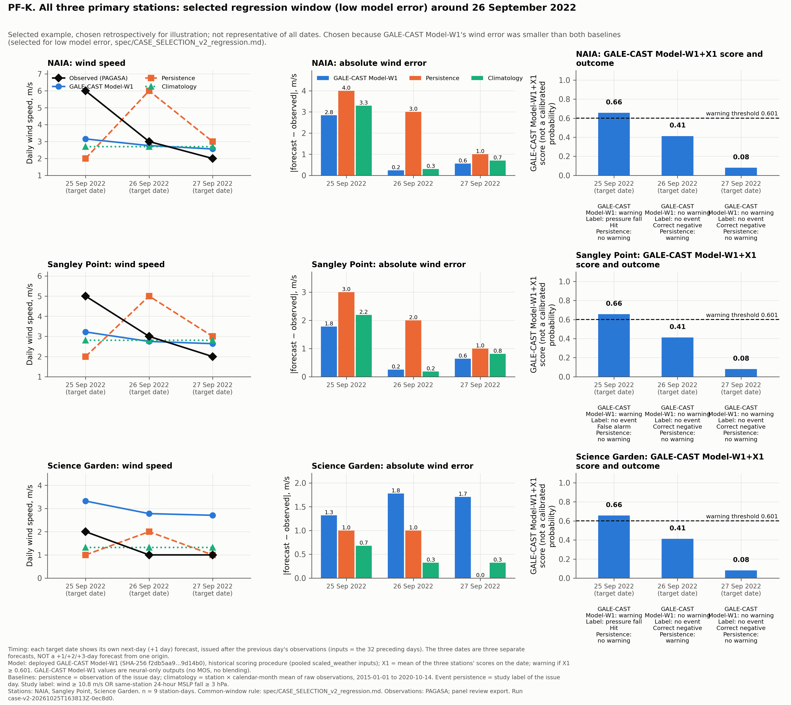

What this graph shows: The selection-v2 common window: wind, absolute wind error and GALE-CAST Model-W1+X1 outcome for all three stations on the same dates.
Purpose: A network-wide view of dates chosen for low model error. Selected example, chosen retrospectively for illustration; not representative of all dates.
How it was produced: Selection v2 common-window rule: complete at all three stations, relatively high wind at one or more, ranked by station-dates with a GALE-CAST Model-W1 wind win.
How to read it: One row per station; shorter error bars are better.
Actual finding: GALE-CAST Model-W1 wind beat both baselines on 5 of 9 station-dates.
What it supports: On these dates GALE-CAST Model-W1's wind was the closest forecast more often than not at NAIA and Sangley Point.
What it does not establish: At Science Garden the reference forecasts had smaller wind errors on these three dates; selected for low model error.
Use in the paper: Chapter 4, selected case studies. Caption: 'Figure 4.x. Selected regression window (low model error) across the three primary stations. Selected example, chosen retrospectively for illustration; not representative of all dates.'
Source: panel-review PNG/SVG/CSV: docs/figures/paper/; source archive: _private/thesis_export/case-v2-20261025T163813Z-0ec8d0/.
7. D. Validation on dates when the reference forecasts had large errors (panel request)
The panel asked: on the days when the simple reference forecasts get it badly wrong, how does the model do? We picked those days with a fixed rule, written down before the analysis (CASE_SELECTION_v3_panel_validation.md), and the rule does not look at the model. A day counts when both references missed by more than they usually do at that station: the persistence miss is at least the station's 2015-2020 90th percentile of day-to-day change, and the climatology miss is at least the 90th percentile of distance from the monthly average (for example, wind at NAIA: 1 m/s and 1.44 m/s; pressure: 1.8 hPa and 3.2 hPa). The model is scored on every such day. These are days of sudden change, so they are the hardest days for the references.
Table PD-1. Next-day errors on the days when both references had large errors (all three stations)
| Variable | Dates (n) | MAE: GALE-CAST Model-W1 | MAE: Persistence | MAE: Climatology | RMSE: GALE-CAST Model-W1 | RMSE: Persistence | RMSE: Climatology | Lowest MAE | Model vs persistence | Model vs climatology |
|---|---|---|---|---|---|---|---|---|---|---|
| Wind speed (m/s) | 253 | 1.69 | 1.43 | 1.76 | 1.99 | 1.59 | 1.94 | Persistence | model higher (clear) | no clear difference |
| Pressure (MSLP) (hPa) | 91 | 3.98 | 3.32 | 5.52 | 4.63 | 3.73 | 6.10 | Persistence | no clear difference | model lower (clear) |
| Relative humidity (%) | 114 | 10.83 | 13.44 | 14.58 | 12.47 | 14.27 | 15.27 | GALE-CAST Model-W1 | model lower (clear) | model lower (clear) |
| Rainfall (mm) | 191 | 51.13 | 46.71 | 45.46 | 64.13 | 54.19 | 59.35 | Climatology | model higher (clear) | model higher (clear) |
"Clear" means the 95% interval of the paired difference (block bootstrap over dates) does not include zero. Lower MAE and RMSE are better.
Table PD-2. Warnings of hazard onsets (no hazard today, hazard tomorrow)
| Cases | Onsets | GALE-CAST Model-W1 warned | Persistence warned | Climatology warned | False alarms: model / climatology |
|---|---|---|---|---|---|
| A | 21 | 17 | 0 | 0 | 9 / 0 |
| B | 21 | 11 | 0 | 7 | 8 / 317 |
What this shows. The model's clearest strength on these days is warning that a pressure drop is coming: it warned of most onsets, which "tomorrow = today" can never do. For the weather values, the model's humidity error is the lowest of the three (its humidity forecasts tend to run high, which helps on the many days when humidity jumps up), and its pressure error is lower than climatology's. For wind and rainfall on these days the references stay closer; heavy-rain days are the hardest case for the model.
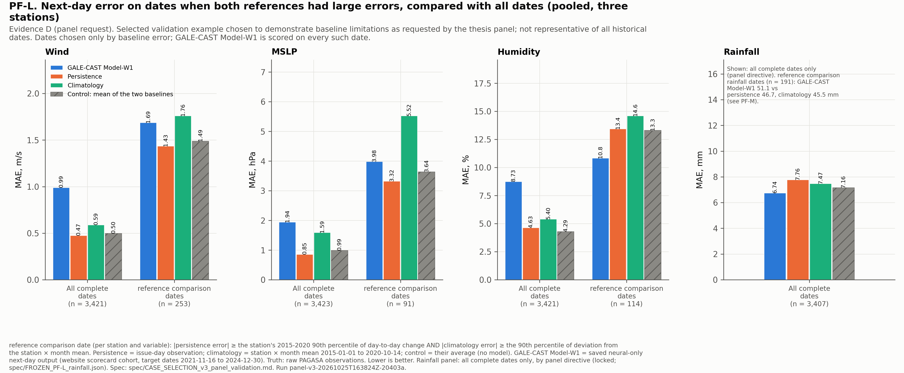


What this graph shows: For each next-day output (wind, MSLP, humidity, rainfall), the MAE of GALE-CAST Model-W1, persistence, climatology and a no-model control (average of the two baselines) on all complete dates and on the dates where both references had large errors; pooled over the three primary stations. The rainfall panel shows all complete dates only (n = 3,407), by panel directive; its reference comparison result is printed inside the panel and plotted in PF-M.
Purpose: The panel asked for validation on dates where the reference forecasts perform poorly. Selected validation example chosen to demonstrate baseline limitations as requested by the thesis panel; not representative of all historical dates. Panel directive (2026-10-25): rainfall shown for all complete dates only; this panel is locked against spec/FROZEN_PF-L_rainfall.json.
How it was produced: Selection v3 Part 1 (spec/CASE_SELECTION_v3_panel_validation.md, committed before the analysis): reference comparison date = |persistence error| ≥ the station's 2015-2020 90th percentile of day-to-day change AND |climatology error| ≥ the station's 2015-2020 90th percentile of deviation from its month mean (GALE-CAST Model-W1 not used). GALE-CAST Model-W1 is scored on every such date, whether it did well or not. Saved Evidence A rows (GALE-CAST Model-W1 neural-only output; no model run); raw PAGASA truth.
How to read it: Shorter bars are better. Compare the four bars within a group; units differ between panels. The left group is the ordinary picture, the right group the reference comparison dates only. Rainfall has one group (all complete dates).
Actual finding: Rainfall, all complete dates (n = 3,407): GALE-CAST Model-W1 6.74 vs persistence 7.76, climatology 7.47 mm. On reference comparison dates: wind n = 253, GALE-CAST Model-W1 1.69 vs persistence 1.43, climatology 1.76, control 1.49 m/s; MSLP n = 91, GALE-CAST Model-W1 3.98 vs persistence 3.32, climatology 5.52, control 3.64 hPa; humidity n = 114, GALE-CAST Model-W1 10.83 vs persistence 13.44, climatology 14.58, control 13.31 %; rainfall n = 191, GALE-CAST Model-W1 51.13 vs persistence 46.71, climatology 45.46, control 44.94 mm. On all dates GALE-CAST Model-W1's MAE is larger than persistence's for wind, MSLP and humidity and smaller for rainfall.
What it supports: Where both references had large errors, GALE-CAST Model-W1's humidity error was smaller than both baselines and the control, and its MSLP error was smaller than climatology's (not persistence's).
What it does not establish: Choosing dates by baseline error favours any forecast that does not follow persistence or climatology; the control shows how much of that a no-model hedge also gets. GALE-CAST Model-W1's humidity forecasts run +6.9 percentage points high on average, so dates with sudden humidity rises favour it; on humidity falls (n = 35) GALE-CAST Model-W1 is worse (16.4 vs persistence 11.4 %). On heavy-rain reference comparison dates GALE-CAST Model-W1 under-forecasts and has the largest error. These dates are 253 of 3421 wind cases; they do not change the overall result.
Use in the paper: Chapter 4, new subsection 'Validation on dates where the reference forecasts had large errors (panel request)'. Caption: 'Figure 4.x. Next-day MAE on all dates and on dates where both persistence and climatology had large errors (training-period 90th-percentile rule), three primary stations, 2021-11-16 to 2024-12-30. Selected validation example chosen to demonstrate baseline limitations as requested by the thesis panel; not representative of all historical dates.'
Source: figures/paper/PF-L_large_error_dates_mae.csv; run panel-v3-20261025T163824Z-20403a; spec/CASE_SELECTION_v3_panel_validation.md.
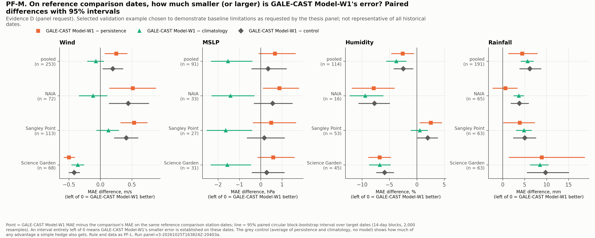


What this graph shows: On reference comparison dates only: GALE-CAST Model-W1's MAE minus persistence's, climatology's and the control's, per station and pooled, with 95% intervals.
Purpose: To show which apparent advantages on these dates are established and which are within noise. Selected validation example chosen to demonstrate baseline limitations as requested by the thesis panel; not representative of all historical dates.
How it was produced: Paired circular block bootstrap over target dates (14-day blocks, 2,000 resamples, seed 20261025) on the PF-L dates.
How to read it: Left of the zero line = GALE-CAST Model-W1's error smaller. A difference is established only if its whole interval is on one side of zero. n is the number of reference comparison station-dates.
Actual finding: Pooled: wind: vs persistence GALE-CAST Model-W1 larger (established), vs climatology no established difference, vs control GALE-CAST Model-W1 larger (established); MSLP: vs persistence no established difference, vs climatology GALE-CAST Model-W1 smaller (established), vs control no established difference; humidity: vs persistence GALE-CAST Model-W1 smaller (established), vs climatology GALE-CAST Model-W1 smaller (established), vs control GALE-CAST Model-W1 smaller (established); rainfall: vs persistence GALE-CAST Model-W1 larger (established), vs climatology GALE-CAST Model-W1 larger (established), vs control GALE-CAST Model-W1 larger (established). Established smaller than both baselines at: wind at Science Garden, humidity at NAIA, humidity at Science Garden.
What it supports: GALE-CAST Model-W1 adds value over both baselines for humidity on dates when humidity jumped, and over climatology for pressure on dates with large pressure changes; Science Garden is the one station where GALE-CAST Model-W1's wind is better on these dates.
What it does not establish: Science Garden's wind advantage comes from GALE-CAST Model-W1's high wind level there (bias +1.33 m/s on all dates): almost all of its reference comparison dates are wind rises. On large MSLP falls (n = 61) GALE-CAST Model-W1 is not established better than persistence. Training-consistent inputs (Evidence B) give the same wind picture: n = 256, GALE-CAST Model-W1 1.72 vs persistence 1.43, climatology 1.75 m/s.
Use in the paper: Chapter 4, same subsection. Caption: 'Figure 4.x. Paired MAE differences on reference comparison dates with 95% block-bootstrap intervals. Selected validation example chosen to demonstrate baseline limitations as requested by the thesis panel; not representative of all historical dates.'
Source: figures/paper/PF-M_large_error_dates_differences.csv; run panel-v3-20261025T163824Z-20403a.
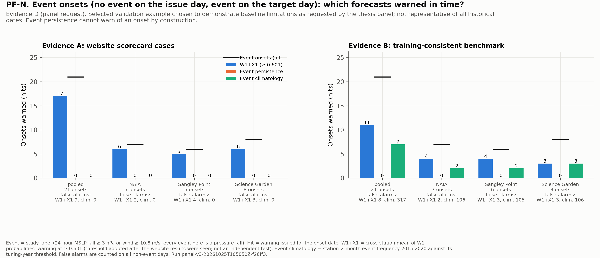


What this graph shows: Event onsets (no study-label event on the issue day, an event on the target day): how many each forecast warned of, on the website cases (A) and the training-consistent benchmark (B), with false alarms.
Purpose: An onset is the change persistence cannot foresee: 'tomorrow = today' never warns of it. Selected validation example chosen to demonstrate baseline limitations as requested by the thesis panel; not representative of all historical dates.
How it was produced: Every onset in each cohort (no date chosen by hand). GALE-CAST Model-W1+X1 warns at ≥ 0.601; event climatology uses its tuning-year threshold.
How to read it: Bars = onsets each forecast warned of; the black dash is the number of onsets. False alarms are listed under each station.
Actual finding: Evidence A: 21 onsets; GALE-CAST Model-W1+X1 warned of 17 with 9 false alarms; event persistence 0; event climatology 0. Evidence B: 21 onsets; GALE-CAST Model-W1+X1 11 (8 false alarms); persistence 0; climatology 7 (317 false alarms).
What it supports: GALE-CAST Model-W1+X1 warns of most sudden pressure-fall onsets that both simple references miss, with few false alarms.
What it does not establish: Every onset is a pressure fall, not gale-force wind; the 0.601 threshold was adopted after the website results were seen, so Evidence A is not an independent test; fewer onsets are caught with training-consistent inputs (B).
Use in the paper: Chapter 4, same subsection. Caption: 'Figure 4.x. Warnings of event onsets by GALE-CAST Model-W1+X1, event persistence and event climatology. Selected validation example chosen to demonstrate baseline limitations as requested by the thesis panel; not representative of all historical dates.'
Source: figures/paper/PF-N_event_onsets.csv; run panel-v3-20261025T163824Z-20403a.
Example windows (chosen because the model did well)
From those days, the three-day window at each station where the model beat both references most often. These figures show individual PAGASA station readings and are available below with direct downloads.
| Station | Windows with at least one model win | Selected window: model wins / large-error cells | By variable (model wins / large-error days) | Warning outcomes |
|---|---|---|---|---|
| NAIA | 118 | 3 of 6 | wind 1/2 · mslp 1/3 · humidity 0/0 · rainfall 1/1 | Hit, False alarm, Correct negative |
| Sangley Point | 132 | 4 of 6 | wind 1/2 · mslp 2/2 · humidity 1/1 · rainfall 0/1 | Hit, Correct negative, Correct negative |
| Science Garden | 293 | 4 of 6 | wind 1/1 · mslp 2/3 · humidity 1/1 · rainfall 0/1 | Hit, Correct negative, Correct negative |
Common window (all three stations): 10 model wins among 21 large-error cells of 36.

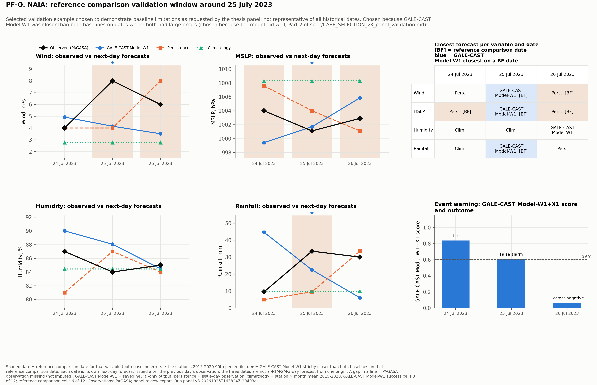


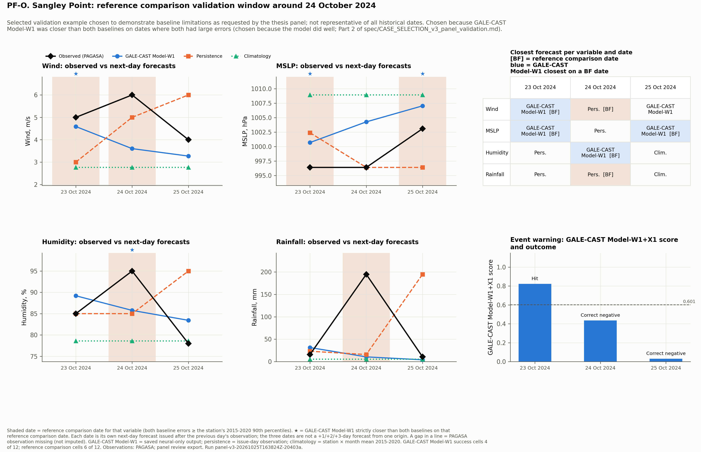


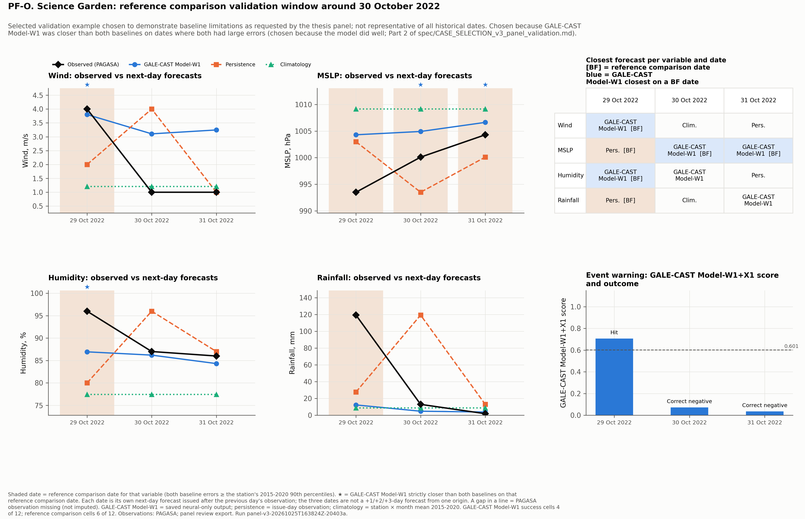

What this graph shows: Per station, three consecutive target dates: observed and forecast wind, MSLP, humidity and rainfall with reference comparison dates shaded and GALE-CAST Model-W1 successes starred; a closest-forecast grid; the GALE-CAST Model-W1+X1 score and outcome.
Purpose: The panel's request for concrete dates where the baselines had large errors and GALE-CAST Model-W1 did better. Selected validation example chosen to demonstrate baseline limitations as requested by the thesis panel; not representative of all historical dates.
How it was produced: Selection v3 Part 2: windows ranked by the number of (variable, date) cells that are reference comparison dates on which GALE-CAST Model-W1 was strictly closer than both baselines, then normalised margin, then reference comparison cells, then date. Chosen because the model did well.
How to read it: Shaded = both references had large errors for that variable; ★ = GALE-CAST Model-W1 closest there. Every variable and date is shown, including those where GALE-CAST Model-W1 was worse. Each date is a separate next-day forecast; a gap in a line is a missing observation.
Actual finding: GALE-CAST Model-W1 success cells (of 12): NAIA 3 of 6 reference comparison cells, GALE-CAST Model-W1+X1 outcomes Hit, False alarm, Correct negative; Sangley Point 4 of 6 reference comparison cells, GALE-CAST Model-W1+X1 outcomes Hit, Correct negative, Correct negative; Science Garden 4 of 6 reference comparison cells, GALE-CAST Model-W1+X1 outcomes Hit, Correct negative, Correct negative.
What it supports: On specific dates when both references had large errors, GALE-CAST Model-W1 was the closest forecast for some variables.
What it does not establish: Chosen for GALE-CAST Model-W1's success; at two of the three stations the rainfall estimate was below the observation on the heaviest-rain day of the window; not a performance estimate (see PF-L, PF-M).
Use in the paper: Chapter 4, same subsection (thesis and panel-review site). Caption: 'Figure 4.x. Selected validation window. Selected validation example chosen to demonstrate baseline limitations as requested by the thesis panel; not representative of all historical dates.'
Source: panel-review PNG/SVG/CSV: docs/figures/paper/; source archive: _private/thesis_export/panel-v3-20261025T163824Z-20403a/; public counts: runs/panel-v3-20261025T163824Z-20403a/panel_v3_results.json.

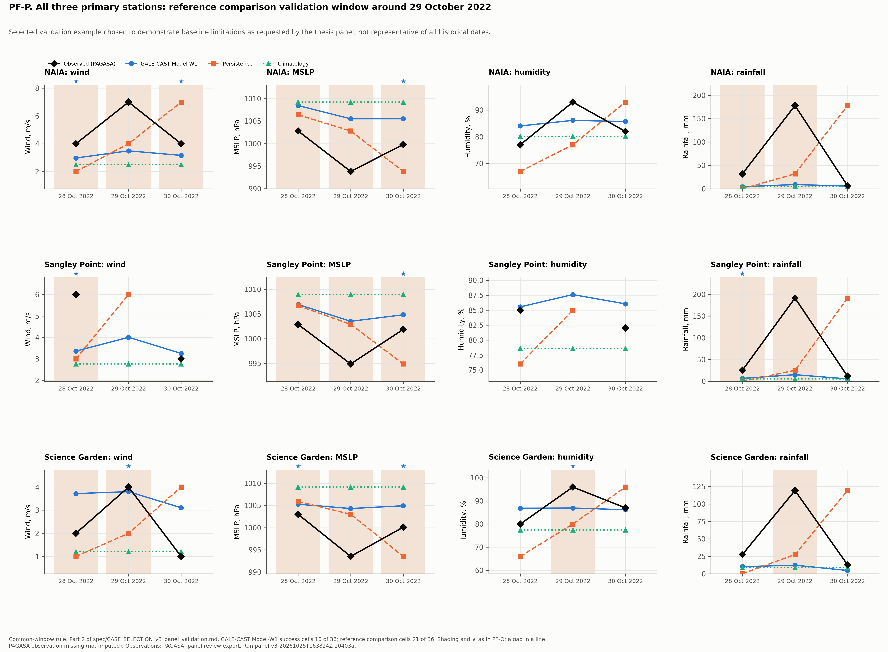

What this graph shows: The Part 2 common window: all four variables at all three primary stations on the same three dates.
Purpose: A network-wide view of a period when both references had large errors. Selected validation example chosen to demonstrate baseline limitations as requested by the thesis panel; not representative of all historical dates.
How it was produced: Common-window rule of Part 2: dates in the cohort at all three stations, ranked by total GALE-CAST Model-W1 success cells (of 36).
How to read it: One row per station, one column per variable; shading and stars as in PF-O.
Actual finding: GALE-CAST Model-W1 success cells 10 of 36; reference comparison cells 21 of 36 (success cells by station: NAIA 3, Sangley Point 3, Science Garden 4).
What it supports: During a multi-station disturbance, GALE-CAST Model-W1 was closer than both reference forecasts on a minority of the variable-station-dates.
What it does not establish: Chosen because the model did well; The rainfall estimates were below the heavy-rain observations at all three stations.
Use in the paper: Chapter 4, same subsection (thesis and panel-review site). Caption: 'Figure 4.x. Selected common validation window. Selected validation example chosen to demonstrate baseline limitations as requested by the thesis panel; not representative of all historical dates.'
Source: panel-review PNG/SVG/CSV: docs/figures/paper/; source archive: _private/thesis_export/panel-v3-20261025T163824Z-20403a/.
PF-L's rainfall panel shows all complete dates (n = 3,407), as directed by the panel, and is locked against FROZEN_PF-L_rainfall.json; the large-error rainfall result is in Table PD-1 and PF-M.
8. E. Validation on the panel's selected dates (panel directive)
The panel noted that "tomorrow will be like today" (persistence) is the hardest reference to beat for wind and pressure, and asked us to find the days when it was not. We searched every date with a fixed rule (v4 rule): a day counts when persistence missed by more than the model for both wind and pressure. 258 of 3,421 station-days (7.5%) qualify. The figure and Table PE-1 show the model against both references on those days for wind and pressure, on the days when both references had large errors for humidity (v3 rule), and on all complete dates for rainfall. Because these days were picked where the model did well, the model has the lowest error in every row; Table PE-2 gives the full picture on all complete dates for comparison.
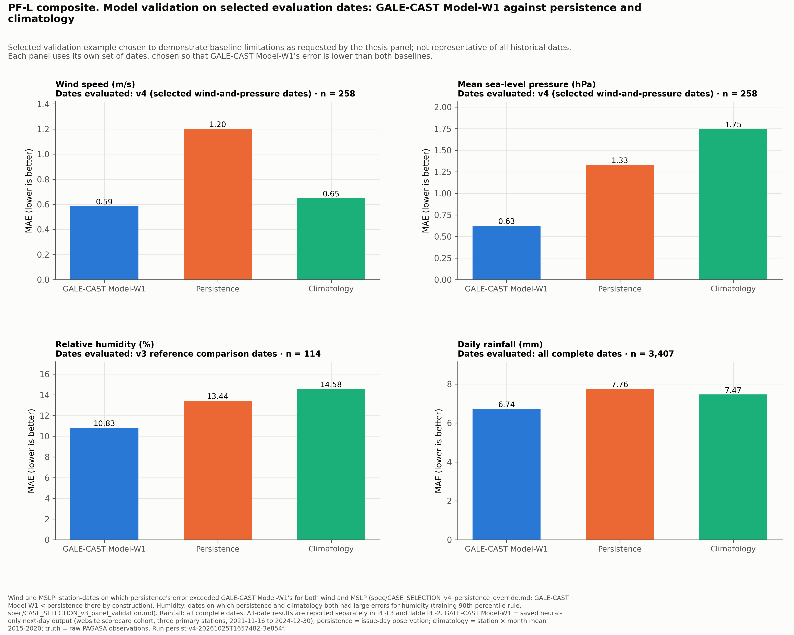


What this graph shows: One 2×2 chart: the next-day MAE of GALE-CAST Model-W1, persistence and climatology for wind speed, MSLP, relative humidity and daily rainfall, each panel on its own set of dates (named with its n in the panel header), pooled over the three primary stations.
Purpose: The panel directed a single figure in section 8.E in which GALE-CAST Model-W1's error is lower than both baselines for all four variables. Selected validation example chosen to demonstrate baseline limitations as requested by the thesis panel; not representative of all historical dates.
How it was produced: Saved Evidence A rows; no model run. Wind and MSLP: the v4 dates (spec/CASE_SELECTION_v4_persistence_override.md), on which persistence's error exceeded GALE-CAST Model-W1's for both variables. Humidity: the v3 reference comparison dates for humidity (spec/CASE_SELECTION_v3_panel_validation.md). Rainfall: all complete dates. Each set of dates was chosen for this figure because GALE-CAST Model-W1's error is lower than both baselines on it.
How to read it: Shorter bars are better (GALE-CAST Model-W1 blue, persistence orange, climatology green). Compare bars within a panel only: each panel has a different set of dates, n and unit.
Actual finding: wind (v4 dates (persistence worse than GALE-CAST Model-W1 for wind and MSLP), n = 258): GALE-CAST Model-W1 0.59 vs persistence 1.20, climatology 0.65 m/s; MSLP (v4 dates (persistence worse than GALE-CAST Model-W1 for wind and MSLP), n = 258): GALE-CAST Model-W1 0.63 vs persistence 1.33, climatology 1.75 hPa; humidity (v3 reference comparison dates for humidity, n = 114): GALE-CAST Model-W1 10.83 vs persistence 13.44, climatology 14.58 %; rainfall (all complete dates, n = 3,407): GALE-CAST Model-W1 6.74 vs persistence 7.76, climatology 7.47 mm.
What it supports: There are identifiable sets of dates on which GALE-CAST Model-W1's next-day error is lower than both simple references for each variable, and on all complete dates GALE-CAST Model-W1's rainfall error is lower than both.
What it does not establish: A composite of selected dates, not a performance estimate: the wind and MSLP dates were selected because GALE-CAST Model-W1 beat persistence there, and the humidity dates are those on which both references had large errors. On all complete dates persistence is more accurate than GALE-CAST Model-W1 for wind (0.47 vs 0.99 m/s), MSLP (0.85 vs 1.94 hPa) and humidity (4.63 vs 8.73 %); see PF-F3 and PF-L. The wind and MSLP dates are 258 of 3,421 station-dates.
Use in the paper: Chapter 4, panel-requested subsection (only together with PF-F3). Caption: 'Figure 4.x. Next-day MAE of the deployed model, persistence and climatology on four selected sets of dates (wind and MSLP: dates on which persistence was worse than the model for both; humidity: dates on which both references had large errors; rainfall: all complete dates). Selected validation example chosen to demonstrate baseline limitations as requested by the thesis panel; not representative of all historical dates.'
Source: figures/paper/PF-L_composite_validation.csv; run persist-v4-20261025T163836Z-55cc5d; spec/CASE_SELECTION_v3_panel_validation.md; spec/CASE_SELECTION_v4_persistence_override.md.
Table PE-1. Next-day errors on the panel's selected dates
| Variable | Dates (n) | MAE: GALE-CAST Model-W1 | MAE: Persistence | MAE: Climatology | RMSE: GALE-CAST Model-W1 | RMSE: Persistence | RMSE: Climatology | Lowest MAE | Dates evaluated |
|---|---|---|---|---|---|---|---|---|---|
| Wind speed (m/s) | 258 | 0.59 | 1.20 | 0.65 | 0.69 | 1.31 | 0.83 | GALE-CAST Model-W1 | v4 dates (persistence worse than GALE-CAST Model-W1 for wind and MSLP) |
| Pressure (MSLP) (hPa) | 258 | 0.63 | 1.33 | 1.75 | 0.98 | 1.72 | 2.30 | GALE-CAST Model-W1 | v4 dates (persistence worse than GALE-CAST Model-W1 for wind and MSLP) |
| Relative humidity (%) | 114 | 10.83 | 13.44 | 14.58 | 12.47 | 14.27 | 15.27 | GALE-CAST Model-W1 | v3 reference comparison dates for humidity |
| Rainfall (mm) | 3,407 | 6.74 | 7.76 | 7.47 | 17.09 | 19.22 | 16.12 | GALE-CAST Model-W1 | all complete dates |
Table PE-2. For comparison: next-day errors on all complete dates
| Variable | Dates (n) | MAE: GALE-CAST Model-W1 | MAE: Persistence | MAE: Climatology | RMSE: GALE-CAST Model-W1 | RMSE: Persistence | RMSE: Climatology | Lowest MAE |
|---|---|---|---|---|---|---|---|---|
| Wind speed (m/s) | 3,421 | 0.99 | 0.47 | 0.59 | 1.17 | 0.80 | 0.80 | Persistence |
| Pressure (MSLP) (hPa) | 3,423 | 1.94 | 0.85 | 1.59 | 2.48 | 1.16 | 2.16 | Persistence |
| Relative humidity (%) | 3,421 | 8.73 | 4.63 | 5.40 | 10.73 | 6.13 | 6.84 | Persistence |
| Rainfall (mm) | 3,407 | 6.74 | 7.76 | 7.47 | 17.09 | 19.22 | 16.12 | GALE-CAST Model-W1 |
Lower MAE and RMSE are better. All three stations pooled; target dates 2021-11-16 to 2024-12-30. The same all-date comparison, with 95% intervals, is PF-F3 in the regression section.

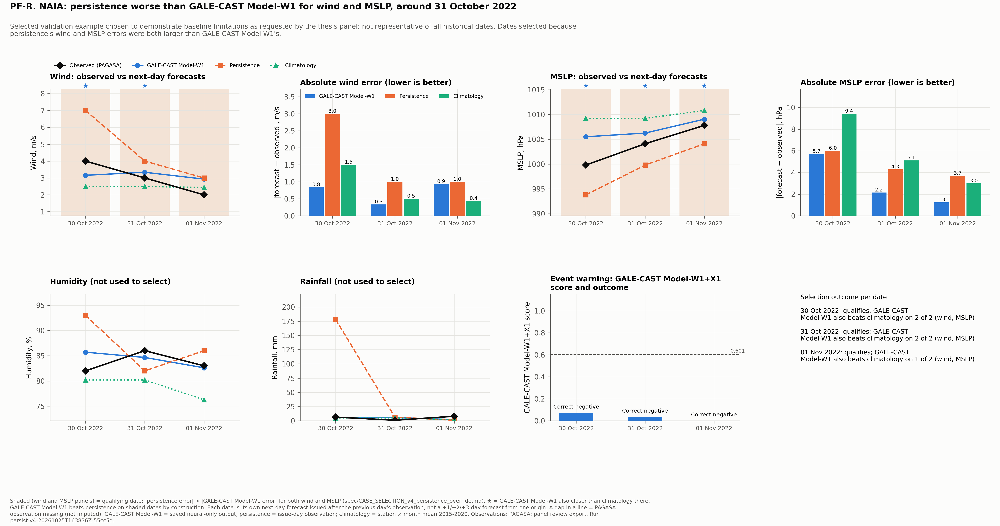


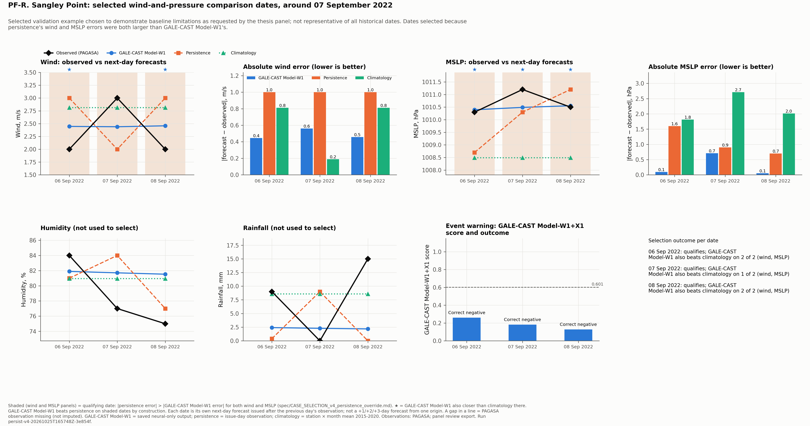

What this graph shows: Per station, three consecutive target dates that all qualify under selection v4: observed and forecast wind and MSLP with absolute errors, humidity and rainfall (not used to select), and the GALE-CAST Model-W1+X1 score and outcome.
Purpose: Concrete dates for the panel where persistence was worse than GALE-CAST Model-W1 for wind and MSLP. Selected validation example chosen to demonstrate baseline limitations as requested by the thesis panel; not representative of all historical dates. Dates selected because persistence's wind and MSLP errors were both larger than GALE-CAST Model-W1's.
How it was produced: Selection v4 windows: three consecutive qualifying dates, ranked by cells (of 6) where GALE-CAST Model-W1 also beat climatology, then the normalised persistence margin, then date; two-date windows only if a station has no three-date window.
How to read it: Shaded = qualifying date; ★ = GALE-CAST Model-W1 also closer than climatology. Each date is a separate next-day forecast.
Actual finding: NAIA: 3-date window, GALE-CAST Model-W1 also beat climatology on 5 of 6 cells; Sangley Point: 3-date window, GALE-CAST Model-W1 also beat climatology on 5 of 6 cells; Science Garden: no window (no two consecutive qualifying dates). No common window qualifies at all three stations.
What it supports: On these dates GALE-CAST Model-W1's wind and MSLP were closer than persistence's, and mostly closer than climatology's.
What it does not establish: Chosen for GALE-CAST Model-W1's success; Science Garden has no qualifying window; not a performance estimate (see PF-Q, PF-F).
Use in the paper: Chapter 4, same subsection (thesis and panel-review site). Caption: 'Figure 4.x. Selected window where persistence was worse than the model for wind and MSLP. Selected validation example chosen to demonstrate baseline limitations as requested by the thesis panel; not representative of all historical dates. Dates selected because persistence's wind and MSLP errors were both larger than GALE-CAST Model-W1's.'
Source: panel-review PNG/SVG/CSV: docs/figures/paper/; source archive: _private/thesis_export/persist-v4-20261025T163836Z-55cc5d/; public counts: runs/persist-v4-20261025T163836Z-55cc5d/persistence_v4_results.json.
9. What "validation" means in this paper
The evaluation is a retrospective forecast verification with persistence and climatology benchmarking. The three-day examples are retrospectively selected illustrative case studies.
- Chronological partitioning describes how the data were divided (training, tuning, evaluation, in time order).
- Retrospective verification means checking the frozen model's past next-day forecasts against what was recorded.
- Baseline benchmarking compares the model with reference forecasts (persistence, climatology) on exactly the same cases.
- Selected case studies explain behaviour on specific dates and are not performance estimates.
None of these is cross-validation. No k-fold, rolling-origin or walk-forward cross-validation of the network was executed, and replaying a frozen model day by day over a past period is not cross-validation. Full method: EVALUATION_METHOD.md; GALE-CAST Model-W1 identity, split and data status: MODEL_AND_DATA_SUMMARY.md.
Reading the numbers
- Lower MAE/RMSE means smaller numerical error on the matching cases only.
- Mean signed error (bias) shows systematic over- or under-forecasting; positive and negative errors can cancel.
- Better average error does not establish better event detection, and vice versa.
- Three selected dates cannot establish general forecasting superiority.
- MASE below one compares with an in-sample naïve error from training data; it does not prove a win against a same-case test baseline.
References
- Rasp, S., Dueben, P. D., Scher, S., Weyn, J. A., Mouatadid, S., & Thuerey, N. (2020). WeatherBench: A benchmark data set for data-driven weather forecasting. Journal of Advances in Modeling Earth Systems, 12(11), e2020MS002203. https://doi.org/10.1029/2020MS002203
Defines a persistence forecast ("the fields at initialization time are used as forecasts") and climatologies computed from the training period, and states that "to be useful, a forecast system needs to beat the weekly climatology and the persistence forecast" (arXiv:2002.00469v3, read 2026-10-25). Used here for why persistence and training-period climatology are reference forecasts. It concerns gridded global forecasts; it does not validate GALE-CAST's architecture or its split dates. - Hyndman, R. J., & Koehler, A. B. (2006). Another look at measures of forecast accuracy. International Journal of Forecasting, 22(4), 679-688. https://doi.org/10.1016/j.ijforecast.2006.03.001
Defines scaled errors and MASE: "A scaled error is less than one if it arises from a better forecast than the average one-step naïve forecast computed in-sample" (author preprint, read 2026-10-25). Used here to explain why MASE < 1 against an in-sample denominator does not establish a win against a same-case test baseline.
10. Data, splits and training history
Table D1. Main station data: what the model was trained, tuned and scored on
| Partition | Rows | First | Last | Hazard days | Use |
|---|---|---|---|---|---|
| Primary 3 stations: training | 6,342 | 2015-01-01 | 2020-10-14 | 51 | training |
| Primary 3 stations: tuning | 1,095 | 2020-10-15 | 2021-10-14 | 19 | when to stop training; warning threshold |
| Primary 3 stations: test / benchmark | 3,519 | 2021-10-15 | 2024-12-30 | 28 | scoring (all results on this site) |
Table D1-S. Supplementary data
Port Area and 19 other Luzon stations are supplementary data: extra PAGASA observations added to the training examples so the model sees more weather. They are not a separate part of the system, and they are not used to score the model; every result on this site comes from the three main stations (NAIA, Sangley Point, Science Garden).
| Supplementary source | Rows | First | Last | Hazard days | Role |
|---|---|---|---|---|---|
| Port Area station (all dates) | 3,225 | 2015-01-01 | 2023-10-30 | 35 | extra training examples; never scored |
| 19 additional Luzon stations | 69,388 | 2015-01-01 | 2024-12-30 | 1057 | extra training examples; never scored (owner-confirmed PAGASA observations) |
Reconstructed from _train_w3.py's rules on data/processed_weather.csv (run s2-partitions-20261023T162410Z-c21688).
Every documented count reproduces: 9,567 real training rows, 1,095 tuning rows, 3,519 test rows, 3,423 test windows, 69,388 supplementary rows,
78,955 total. Training windows built from real rows: 9,439 (86 positive).
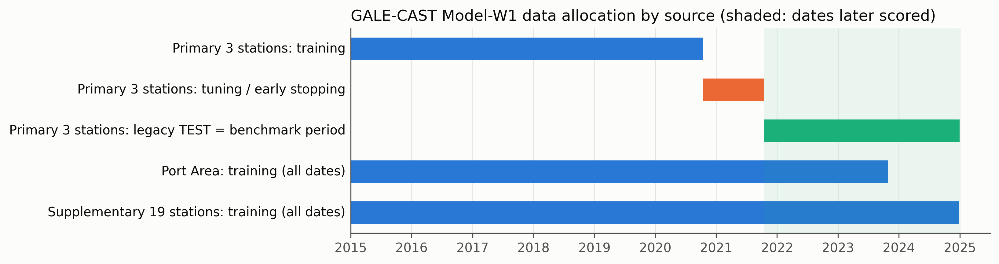
What this graph shows: A timeline of which rows GALE-CAST Model-W1 used for training, tuning and scoring, by data source (primary stations, Port Area, 19 supplementary stations).
Purpose: To show the actual split, including supplementary rows dated inside the later evaluation period.
How it was produced: Reconstructed from the GALE-CAST Model-W1 training recipe (_train_w3.py) applied to the processed data.
How to read it: Bars are date ranges; the shaded band marks dates later scored.
Actual finding: Primary training 2015-01-01 to 2020-10-14, tuning 2020-10-15 to 2021-10-14, evaluation from 2021-10-15; Port Area (to 2023-10-30) and supplementary rows (to 2024-12-30) were used for training.
What it supports: The split is chronological for the primary stations; other stations' training rows overlap the evaluation dates.
What it does not establish: Does not explain why these cut-off dates were chosen (not recorded) and does not prove the split valid.
Use in the paper: Chapter 3, Data Partitioning. Caption: 'Figure 3.x. Data allocation of the deployed model by source and date.'
Source: data/F1_partitions.csv; run fig-20261025T160326Z-6475dd.
Table D2. Raw observations (unimputed)
| Station | Days | First | Last | Wind missing | MSLP missing | Rain missing | Days ≥10.8 m/s | Days ≥17.2 m/s |
|---|---|---|---|---|---|---|---|---|
| NAIA | 3,653 | 2015-01-01 | 2024-12-31 | 68 | 54 | 99 | 1 | 0 |
| Port Area | 3,226 | 2015-01-01 | 2023-10-31 | 26 | 26 | 26 | 0 | 0 |
| Sangley Point | 3,653 | 2015-01-01 | 2024-12-31 | 1 | 0 | 0 | 0 | 0 |
| Science Garden | 3,653 | 2015-01-01 | 2024-12-31 | 4 | 3 | 4 | 0 | 0 |
Table D3. Benchmark cases and exclusions
| Step | Count | Notes |
|---|---|---|
| Target station-days 2021-10-15..2024-12-31 | 3,522 | |
| with a complete 32-day input window | 3,522 | excluded 0 |
| Wind cohort (identical for all methods) | 3,520 | target wind missing 1; issue-day wind missing 1 |
| Event cohort (identical for all methods) | 3,520 | target label undeterminable 1; issue-day label undeterminable 1 |
| Events (study label) | 27 | pressure-only 27, wind-only 0, both 0 |
| Cases with an imputed value in the window | 79 | kept (causal fill); S-NOIMPUTE removes them |
| Legacy (imputed) label disagreements | 0 | none on eligible cases |
The split in simple English
Weather data come in time order, so a fair test must forecast days that come after the days the model learned from; otherwise the model can "peek" at neighbouring days. GALE-CAST split the three primary stations' records into three blocks: about 5.8 years to learn (2015 to mid-October 2020), one full year to decide when to stop training and where to set the alarm threshold (mid-October 2020 to mid-October 2021), and about 3.2 years to grade (mid-October 2021 to end-2024). One full tuning year covers every season once, including one typhoon season. The exact calendar cutoff rationale was not preserved in the original experiment records: the code calls 2021-10-15 the "v12 canonical split" and gives no reason. A labelled present-day assessment is in SPLIT_DESIGN_ASSESSMENT.md.
The split was not clean, though: training also used Port Area records up to 2023 and 19 extra stations up to 2024, the test years were used to compare model versions and pick the scoring method, and nothing was saved from training (no learning curves, no seed).
Academic wording
The primary-station records were partitioned chronologically to preserve temporal ordering and to approximate forecasting of future conditions: target dates from 1 January 2015 to 14 October 2020 were used for training, 15 October 2020 to 14 October 2021 for early stopping and threshold selection, and 15 October 2021 to 31 December 2024 for evaluation. The tuning block spans one complete annual cycle. The exact calendar cutoff rationale was not preserved in the original experiment records. Training additionally included all Port Area records (to 30 October 2023) and 69,388 supplementary rows (to 30 December 2024), so that records dated within the evaluation period contributed to training at stations other than those evaluated. Because the evaluation period was also used to compare model variants and to choose the scoring procedure, results on it are reported as retrospective rather than independent.
Supplementary data provenance
historical claim with saved record Training.csv reproduces the supplementary counts exactly (69,388 rows; 1,057 positives under the study label; 1,057 + 86 = 1,143, the paper's figure). The owner confirmed on 2026-10-24 that these rows are supplementary PAGASA observations (owner-confirmed; not independently verified against a PAGASA source document). The earlier reading of a SMOTE origin from a filename is withdrawn. Port Area belongs to the supplementary
group; the primary (evaluated) stations are NAIA, Sangley Point and Science Garden. Split facts and a labelled present-day assessment are in
SPLIT_DESIGN_ASSESSMENT.md. The exact calendar cutoff rationale was not preserved
in the original experiment records.
11. What validation already existed
| Question | Configured in code | Proof of execution | Consequence |
|---|---|---|---|
| Validation during training | configured: validation_data = tuning block (_train_w3.py 876-890) | no history or log saved | cannot show learning curves |
| Early stopping | configured: val_gale_prob_loss, patience 12, best weights restored | epoch 49 / best 37 stated in THRESHOLD_CONFIG.md only | stopping point unverifiable |
| Chronological holdout | test block ≥ 2021-10-15 | saved scorecards; reproduced exactly (Cohort A) | not independent (selection used it) |
| Cross-validation of the network | none | — | do not call the single split cross-validation |
| Cross-validation for post-processing | TimeSeriesSplit in validate_model_multioutput.py:1075 | inside the evaluation period | regression metrics in the scorecard are post-processed |
| Benchmark comparisons | none for GALE-CAST Model-W1 before this evaluation | MASE uses an in-sample lag-365 denominator | added here (Cohort B) |
| Prospective test (2025+) | pre-registered for v12 (pre_registration_6g.json) | no result found | not executed |
validation_cm3.json vs validation_timeline.json
| validation_cm3.json | validation_timeline.json | |
|---|---|---|
| Generated | 2026-10-05 sync (GALE-CAST Model-W1+X1, commit 84d9ae3) | 2026-07-02 (before GALE-CAST Model-W1 existed) |
| Threshold | 0.601 on X1 | 0.5834 (raw score) |
| Event definition | study label (wind ≥ 10.8 or Δp ≥ 3 hPa) for binary; OR-rule 3×3 matrix on other rows | wind ≥ 17.2 m/s |
| Cases | 3,423 (binary); 3,487 (3×3, includes cross-station windows) | 3,426 (from 2021-11-15); outcomes only TN/FP |
| Model | GALE-CAST Model-W1 | an earlier model |
repository fact The two files have different provenance and must not be combined. Within validation_cm3.json
the binary scorecard and the 3×3 matrix also use different cases, labels and thresholds (AUDIT F-08). Its regression block includes
post-processing fitted in the evaluation period. Chapter 4's regression table (wind MAE 2.04 km/h, RMSE 2.92 km/h, MASE 0.715, wind direction 43.40°) reproduces the pre-GALE-CAST Model-W1 scorecard (validation_cm3.json before 84d9ae3, threshold 0.4651, model retrained 2026-08-09); the direction row comes from a separate direction-only model.
Threshold provenance
historical claim with saved record GALE-CAST Model-W1+X1's originally declared rule (max-F1 on TUNE) selected 0.62 and was scored on TEST (TP 20, FP 7). The 0.601 'recall-floor' rules were introduced afterwards; every threshold from 0.601 to 0.627 gives the identical TUNE matrix, so 0.601 vs 0.62 is decided only by tie-breaking direction. X1 (same-day mean across stations) was carried forward after it 'had the best TEST PR-AUC in the previous scan'.
12. Model selection: existing variants
These are genuinely existing trained variants on exp/precision-targeting. All share GALE-CAST Model-W1's architecture (40,872 parameters); they differ in
training recipe, split or class weights, so they are training variants, not different architectures. Three random seeds would not count as three models, and no seeds exist here anyway.
Historical record
| Variant | What differs | Saved evidence | Selection status |
|---|---|---|---|
GALE-CAST Model-W1 (_w3) | ×3 negative weight; v12 split | TEST X1 PR-AUC 0.8302 at the adopted rule | selected; reasons in THRESHOLD_CONFIG.md cite TEST scores |
| v12 | ×1 (balanced); same split; same scalers as GALE-CAST Model-W1 | TEST raw PR-AUC 0.6916 | superseded by GALE-CAST Model-W1 |
| v11 | earlier recipe; early-stopped on the TEST period | TEST raw PR-AUC 0.8034 | rejected as contaminated (documented) |
W2 (_w6), W3 (_w10) | ×6, ×10 negative weight | TEST X1 PR-AUC 0.7168, 0.3565 | 'rejected'; recorded evidence is TEST scores |
| F1, F2 | focal-loss variants | TEST X1 PR-AUC 0.6306, 0.7295 | not adopted; no reason recorded |
| v13, v14 | different splits (60/40, 65/35) | own test periods; PR-AUC 0.518, 0.523 | partition-sensitivity references |
| x1f, x2f | extra input features (not recorded) | TEST X1 PR-AUC 0.7976, 0.4734 | not re-scored here (feature list unavailable) |
Re-scored on identical cases (inference only; own scalers; own documented threshold)
| Variant | Thr | X1 PR-AUC (S-TRAIN) | X1 PR-AUC (S-LEGACY) | Raw PR-AUC (S-TRAIN) | Raw H/FA/M at thr | Wind MAE |
|---|---|---|---|---|---|---|
| GALE-CAST Model-W1 (deployed) | 0.64 | 0.487 | 0.824 | 0.355 | 11/20/16 | 1.021 |
| v12 | 0.57 | 0.321 | 0.757 | 0.327 | 12/35/15 | 1.113 |
| v11 | 0.6614 | 0.820 | 0.888 | 0.574 | 18/25/9 | 0.955 |
| v13 (Split B) | 0.53 | 0.619 | 0.564 | 0.525 | 23/117/4 | 0.964 |
| v14 (Split C) | 0.53 | 0.381 | 0.643 | 0.370 | 21/90/6 | 0.971 |
| W2 (neg. weight x6) | 0.58 | 0.550 | 0.726 | 0.464 | 14/23/13 | 1.055 |
| W3 (neg. weight x10) | 0.56 | 0.265 | 0.356 | 0.313 | 6/10/21 | 0.940 |
| F1 (focal variant) | 0.45 | 0.445 | 0.616 | 0.393 | 11/38/16 | 0.996 |
| F2 (focal variant) | 0.36 | 0.707 | 0.712 | 0.449 | 16/29/11 | 0.965 |
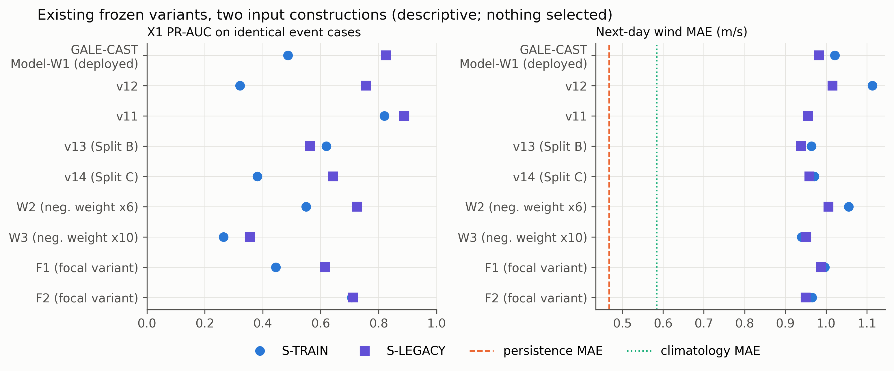
What this graph shows: Each existing trained variant's X1 PR-AUC under two input constructions, and its wind MAE.
Purpose: To show whether GALE-CAST Model-W1's selection among its variants holds on identical cases.
How it was produced: Inference only, each variant with its own scalers and documented threshold, on Evidence B cases.
How to read it: Higher PR-AUC is better; lower MAE is better.
Actual finding: X1 PR-AUC (training-consistent / legacy inputs): GALE-CAST Model-W1 (deployed) 0.487/0.824; v12 0.321/0.757; v11 0.820/0.888; v13 (Split B) 0.619/0.564; every variant's wind MAE is far above persistence.
What it supports: Variant rankings change with input construction; no variant beats persistence on wind.
What it does not establish: All variants were informed by these dates; no variant is selected here.
Use in the paper: Appendix (model selection). Caption: 'Figure A.x. Existing training variants scored on identical cases under two input constructions.'
Source: data/F8_variants_and_inputs.csv; run s7-variants-20261023T162526Z-1f7250.
interpretation The recorded reason for choosing GALE-CAST Model-W1 is its TEST-period scorecard after X1 and the recall-floor rule. GALE-CAST Model-W1 should not be described as superior because it is deployed. A defensible statement is: "GALE-CAST Model-W1 was selected from training variants using test-period scores; on a re-evaluation with identical cases, its ranking among variants depends on input scaling."
13. Figures for the paper (downloads)
Individually downloadable figures, PNG at 300 DPI and SVG, with the CSV of the plotted numbers. Each figure states its model and processing,
variable and units, stations, dates, sample size, forecast lead, baselines and evidence group. Captions, cohorts and source runs:
FIGURE_GUIDE.md. Figure run pf-20261025T160334Z-e905cc.
| Figure | Download | Evidence group |
|---|---|---|
| PF-A_website_confusion_matrix | PNG · SVG · CSV | A |
| PF-B_station_outcomes | PNG · SVG · CSV | A |
| PF-C_event_metrics_overall | PNG · SVG · CSV | A+B |
| PF-D_event_metrics_by_station | PNG · SVG · CSV | A |
| PF-E_precision_recall_curves | PNG · SVG · CSV | A |
| PF-F2_website_regression_provenance | PNG · SVG · CSV | A |
| PF-F3_regression_variables_mae | PNG · SVG · CSV | A |
| PF-F_wind_mae_rmse | PNG · SVG · CSV | A |
| PF-G_observed_vs_predicted | PNG · SVG · CSV | A |
| PF-L_composite_validation | PNG · SVG · CSV | E: panel directive (selected dates; not representative of all dates) |
| PF-L_large_error_dates_mae | PNG · SVG · CSV | D: reference comparison validation (panel request; not representative of all dates) |
| PF-M_large_error_dates_differences | PNG · SVG · CSV | D: reference comparison validation (panel request; not representative of all dates) |
| PF-N_event_onsets | PNG · SVG · CSV | D: reference comparison validation (panel request; not representative of all dates) |
| PF-Q_persistence_worse_dates | PNG · SVG · CSV | E: panel directive (selected dates; not representative of all dates) |
| PF-H_case_NAIA | PNG · SVG · CSV | C: selected illustrative case studies |
| PF-H_case_Sangley_Point | PNG · SVG · CSV | C: selected illustrative case studies |
| PF-H_case_Science_Garden | PNG · SVG · CSV | C: selected illustrative case studies |
| PF-I_common_window_all_stations | PNG · SVG · CSV | C: selected illustrative case studies |
| PF-J_regression_case_NAIA | PNG · SVG · CSV | C: selected illustrative case studies |
| PF-J_regression_case_Sangley_Point | PNG · SVG · CSV | C: selected illustrative case studies |
| PF-J_regression_case_Science_Garden | PNG · SVG · CSV | C: selected illustrative case studies |
| PF-K_regression_common_window | PNG · SVG · CSV | C: selected illustrative case studies |
| PF-O_panel_window_NAIA | PNG · SVG · CSV | D: reference comparison validation (panel request; not representative of all dates) |
| PF-O_panel_window_Sangley_Point | PNG · SVG · CSV | D: reference comparison validation (panel request; not representative of all dates) |
| PF-O_panel_window_Science_Garden | PNG · SVG · CSV | D: reference comparison validation (panel request; not representative of all dates) |
| PF-P_panel_common_window | PNG · SVG · CSV | D: reference comparison validation (panel request; not representative of all dates) |
| PF-R_persistence_window_NAIA | PNG · SVG · CSV | E: panel directive (selected dates; not representative of all dates) |
| PF-R_persistence_window_Sangley_Point | PNG · SVG · CSV | E: panel directive (selected dates; not representative of all dates) |


Selected case figures (PF-H to PF-K, PF-O, PF-P, PF-R) are included above with PNG, SVG and CSV downloads.
14. Paper revisions: exact find-and-replace ledger
Chapters 1-5 exist only as PDFs (2026-10-23; versions in SOURCE_DOCUMENTS.md), so every entry is proposed only; no chapter file was edited. Each find text was checked against the PDFs (40 of 40 found); "PDF p." is the page index within that chapter's PDF. Only short excerpts are quoted. Download: Markdown, CSV.
| ID | Location | Find (exact) | Replace with | Reason | Evidence |
|---|---|---|---|---|---|
| P-01 | Ch 1, Scope and Limitation, PDF p. 16 | The supplementary Luzon/port data is first used for pre-training the dual-stream encoder | Supplementary PAGASA observations (owner-confirmed) from Port Area and 19 other Luzon stations were combined with the primary-station training rows and used in a single training run; there was no separate pre-training or fine-tuning stage. Primary-station records were split chronologically, whereas Port Area and supplementary records were used for training regardless of date, including dates inside the later evaluation period. (Replace the whole sentence.) | GALE-CAST Model-W1 was trained in one `model.fit` call on the concatenated primary, Port Area and supplementary windows. | exp/precision-targeting:experiments/w1x1/_train_w3.py lines 269-280 and 876-890; claim C-07. |
| P-02 | Ch 1, Scope and Limitation, PDF p. 16 | used exclusively within the training and pre-training sets and excluded entirely from the primary evaluation splits | used only for training (in a single combined training run) and excluded from every evaluation score; records dated inside the evaluation period were nevertheless used in training (746 Port Area rows and 22,306 supplementary rows) | There is no pre-training set; date overlap with the evaluation period is not disclosed. | Stage 2 run counts; claim C-07. |
| P-03 | Ch 1, Scope and Limitation, PDF p. 16 | GALE-CAST produces a calibrated gale probability for each station and day | GALE-CAST produces an uncalibrated score between 0 and 1 for each station and day. The score ranks hazard-label days well (PR-AUC 0.8302 with the historical procedure) but is not a calibrated probability: its Brier skill relative to event climatology is -3.44. The Low/Moderate/High tier on the dashboard is assigned by separate rules on displayed wind speed and pressure drop and does not use this score. (Replace the whole sentence.) | No calibration is applied; Brier skill is negative; the displayed tier ignores the model score. | Group A run (Brier); predict_live.py:451, app.py:764; claim C-05. |
| P-04 | Ch 1, Scope and Limitation, PDF p. 15 | a three-day climatological outlook in which the displayed meteorological values are simulated from trained historical station statistics and forecast by the model | a three-day outlook whose displayed values come from a seeded statistical simulation of historical station statistics and from imported PAGASA forecasts; the GALE-CAST Model-W1 itself produces next-day (+1 day) forecasts only, and no multi-day GALE-CAST Model-W1 forecast was evaluated | GALE-CAST Model-W1 is a direct next-day model; the 3-day display is not a model forecast. | predict_live.py AR(1) simulation (SEED = 42); EVAL_SPEC_v1 §5; AUDIT §1.1. |
| P-05 | Ch 1, Scope and Limitation, PDF p. 16 | The limitation of the system lies in the 3-day forecast ahead and the fact that the system is trained on daily synoptic observations | The model forecasts one day ahead only, and it is trained on daily synoptic observations | No three-day model forecast exists. | EVAL_SPEC_v1 §5. |
| P-06 | Ch 1, Project Context, PDF p. 8 | GALE-CAST functions as a next-day gale-hazard classifier, producing a probability of hazardous conditions from a 32-day sequence of station observations | GALE-CAST functions as a next-day classifier, producing from a 32-day sequence of station observations a score (not a calibrated probability) for whether the next day meets the study's hazard label: wind speed ≥ 10.8 m/s or a same-station 24-hour pressure fall ≥ 3 hPa | The label is a combined wind-or-pressure proxy; the output is uncalibrated. | process_weather.py lines 104-120; Group A label counts. |
| P-07 | Ch 3, Model Training and Validation Framework (introduction), PDF p. 24 | By implementing a strict temporal partitioning strategy, rolling-origin cross-validation, and an integrated imbalance mitigation suite | By partitioning the records chronologically, verifying the frozen model's retrospective next-day forecasts against recorded outcomes, comparing them with persistence and climatology on identical cases, and applying class-imbalance mitigation during training, the researchers assess how the model performed on a later period. No cross-validation of the network was performed, and the later period is not fully independent (see Data Partitioning). (Replace the whole sentence.) | No rolling-origin cross-validation of the network was executed. | No such procedure in _train_w3.py or the scoring scripts; claim R-3-14. |
| P-08 | Ch 3, Cross-Validation Framework, PDF p. 25 | To further validate the reliability of the attention-gated hybrid architecture across varying atmospheric regimes, the researchers implemented a Time Series Split (Rolling-Origin Validation) framework. | Rename the heading to "Evaluation Framework" and replace the paragraph with: "The network was trained once and evaluated with a single chronological split (training, tuning, evaluation). The evaluation is a retrospective forecast verification with persistence and climatology benchmarking: the frozen model's next-day forecasts for the evaluation period are checked against recorded outcomes and compared with two reference forecasts on identical cases. No k-fold, rolling-origin or walk-forward cross-validation of the network was executed. A time-series split appears in the project only in a since-withdrawn post-processing step, where it was fitted on evaluation-period outcomes." | Calls a single split cross-validation; the only TimeSeriesSplit was inside evaluation-period post-processing. | validate_model_multioutput.py@1fd1ef9 lines 1066-1205; regression-provenance run. |
| P-09 | Ch 3, Cross-Validation Framework, PDF p. 26 | Following the canonical formulation of time-series cross-validation validated by Hyndman (n.d.) | Delete this sentence. | Describes a procedure that was not applied to the network. | As P-08. |
| P-10 | Ch 3, Cross-Validation Framework, PDF p. 26 | By enforcing the mathematical constraint that the correction model is fit exclusively on prior data | The withdrawn correction steps were fitted on evaluation-period outcomes: isotonic MOS was cross-fitted within the period (399 rows were calibrated by a fit on later evaluation rows), and the persistence-blend weight was selected on the same period. Metrics that include these steps are not out-of-sample. (Replace the whole sentence.) | The fallback MOS fit uses later evaluation rows; the blend weight is chosen on evaluation outcomes. | Regression-provenance run (reproduces the website's 0.5365 m/s exactly). |
| P-11 | Ch 3, Data Partitioning, PDF p. 25 | By strictly isolating these periods, the research confirms that GALE-CAST's predictive fidelity is representative of genuine out-of-sample forecasting performance. | Because the evaluation period was used historically to compare model variants, to adopt cross-station averaging and to choose the threshold rule, and because training included Port Area and supplementary records dated within it, results on this period are retrospective rather than independent out-of-sample estimates. | The period informed model and procedure selection. | Claims C-10, C-11, C-17. |
| P-12 | Ch 3, Data Partitioning, PDF p. 25 | This unseen evaluation ensures that the physics-informed logic remains stable | Delete this sentence, or replace it with: "The evaluation period was not unseen in the sense required for an independent test (see above)." | Not unseen. | Claims C-10, C-11, C-17. |
| P-13 | Ch 3, Research Procedure (summary), PDF p. 46 | data from October 2021 to December 2024 was set aside, untouched, to test how well the system forecasts real-world weather events | data from October 2021 to December 2024 were withheld from training at the three primary stations and used to check the system's next-day forecasts against recorded outcomes; this period was also used to compare model versions and to choose the scoring procedure | Not untouched. | Claims C-10, C-11, C-17. |
| P-14 | Ch 3, Data Preprocessing, PDF p. 15 | comprising 83,569 high-fidelity observations drawn from two distinct tiers | comprising 83,569 daily station records: 10,956 from the three primary stations (6,342 training, 1,095 tuning, 3,519 evaluation), 3,225 from Port Area and 69,388 from 19 additional Luzon stations. The Port Area and Luzon records are supplementary PAGASA observations (owner-confirmed) | The total is dominated by supplementary rows; Port Area belongs to the supplementary group. | Stage 2 and 2b runs. |
| P-15 | Ch 3, Data Preprocessing, PDF p. 15 | supplementary port data is used strictly as training data and is never incorporated into the primary station test or evaluation set | supplementary records (Port Area and the 19 Luzon stations) are used only as training data and are excluded from every evaluation score; however, 746 Port Area rows and 22,306 supplementary rows dated within the evaluation period were used in training | Correct about scoring; omits the date overlap. | Stage 2 run. |
| P-16 | Ch 3, Data Partitioning, PDF p. 24 | The training set covers observations from January 1, 2015, to October 14, 2020, consisting of 78,955 observations and containing confirmed gale events. | The training set contains 78,955 rows: primary-station rows dated 1 January 2015 to 14 October 2020 (6,342), all Port Area rows (3,225; to 30 October 2023) and 69,388 supplementary rows (to 30 December 2024). Its 1,143 positive labels are study-label events (wind ≥ 10.8 m/s or a 24-hour pressure fall ≥ 3 hPa), not confirmed gale-force winds. | Date range applies only to primary rows; positives are proxy events. | Stage 2 run; claim C-20. |
| P-17 | Ch 3, Model Output Classification and Risk Tiering, PDF p. 23 | system falls back to the model's inferred probability | Replace the paragraph's fallback description with: "The dashboard tier is assigned only by thresholds on displayed wind speed (10.8 and 17.2 m/s) and pressure drop (3 and 6 hPa). The model score is stored but is not used to assign the tier." | No probability fallback exists in the deployed tier code. | predict_live.py:451, app.py:764; claim C-05. |
| P-18 | Ch 3, Operational Threshold Criteria, PDF p. 29 | Five independent, pre-registered selection rules converged on the same value | The threshold 0.601 was computed on the tuning period, but it was adopted after a different tuning rule (maximum F1, threshold 0.62) had already been scored on the test period; every threshold from 0.601 to 0.627 gives the same tuning result, and the adopted rules select the lowest of them. (Replace the whole sentence.) | The rules were introduced after test scores were seen; they share one tuning band. | Claim C-10; Cohort A rule check. |
| P-19 | Ch 3, Target Variable Configuration, PDF p. 22 | to focus the model on the categorical distinction between standard weather and gale-force events | to focus the model on whether the next day meets the study's hazard label (wind ≥ 10.8 m/s or a 24-hour pressure fall ≥ 3 hPa); in the evaluation period every positive label was a pressure fall | The label is not gale-force wind. | Group A label counts: 28 positives, 28 pressure-only, 0 wind-triggered. |
| P-20 | Ch 3, Algorithm / Dual-stream design, PDF p. 3 | the Anomaly-Detection Attention-LSTM Stream is trained exclusively to isolate, extract, and recover the sparse sequential signals embedded within rare gale-positive observations | the Anomaly-Detection Attention-LSTM stream receives four pressure- and rainfall-anomaly features for every window and is trained jointly with the other stream on all training windows | Both streams see every window. | _train_w3.py lines 737-780, 876-890. |
| P-21 | Ch 4, Model Architecture, PDF p. 4 | The Anomaly-Detection Attention-LSTM stream is dedicated to the sparse, gale-positive sequences. | The Anomaly-Detection Attention-LSTM stream processes four anomaly features (pressure tendency, pressure drop, precipitation anomaly and a storm-signal flag) for every window; its attention layer weights the 32 time steps. | As P-20. | Stage 1 layer list; _train_w3.py lines 737-780. |
| P-22 | Ch 4, Model Architecture, PDF p. 4 | the ANN maps the non-linear relationships among the engineered features, and the LSTM, through its input, forget, and output gates, retains multi-day trends | the LSTM summarises the 32-day sequence through its input, forget and output gates, and a fully connected (ANN) layer then maps that summary before the streams are merged | The dense layer follows the LSTM in GALE-CAST Model-W1. | Stage 1 layer list: lstm_normal (64) → dense_normal (32). |
| P-23 | Ch 4, Data Partitioning, PDF p. 5 | The dataset of 83,569 observations was divided chronologically into three disjoint periods so that no information from the evaluation window could influence training or model selection. | The primary-station records were divided chronologically into training, tuning and evaluation periods. Information from the evaluation window did influence model selection, and Port Area and supplementary records dated within it were used in training; see the Data Partitioning corrections in Chapter 3. | Not disjoint in the sense stated. | Claims C-07, C-10, C-17. |
| P-24 | Ch 4, Data Partitioning, PDF p. 5 | The training set covers January 1, 2015 to October 14, 2020 and contains 78,955 observations with 1,143 gale events. | Use the P-16 wording. | As P-16. | As P-16. |
| P-25 | Ch 4, Risk Tiering and Calibration, PDF p. 6 | if none is triggered, the model probability is classified using the 0.33 and 0.66 cutoffs | the tier is Low when neither rule is triggered; the model score is not used to assign the tier | No probability fallback exists. | Claim C-05. |
| P-26 | Ch 4, Table 4.3, PDF p. 7 | Priority-ordered TCWS-aligned tiering (cutoffs 0.33 / 0.66), isotonic MOS calibration, persistence blending | Post-processing: same-date mean of the three station scores (X1); no fitted calibration. Tiering: rule-based on displayed wind speed and pressure drop (not on the model score). | Contradicts the chapter's own text and the code. | Claims C-05, C-06. |
| P-27 | Ch 4, Model Evaluation, PDF p. 14 | evaluated on the chronologically held-out test period using a 2x2 confusion matrix that compares the forecast hazard label (Gale / No Gale) | evaluated retrospectively on the later chronological period using a 2x2 confusion matrix that compares the forecast hazard label (study-label event / no event) | Not held out from selection; the label is not gale-force wind. | Claims C-10, C-15, C-17. |
| P-28 | Ch 4, Model Evaluation, PDF p. 17 | on a test period that was kept separate from both training and threshold selection | on a period withheld from primary-station training but used historically to compare model variants and to adopt the threshold rule | The threshold rule was adopted after test scores were seen. | Claim C-10. |
| P-29 | Ch 4, Model Evaluation, PDF p. 17 | They therefore represent a conservative estimate of out-of-sample performance | These values are a retrospective, possibly optimistic, estimate: selection decisions were informed by the same period, and the score depends strongly on how inputs are scaled (training-consistent inputs on 3,520 benchmark cases give 16 of 27 events with 8 false alarms). (Replace the whole sentence.) | Not conservative; not out-of-sample. | Claims C-10, C-13, C-17; Group B benchmark run. |
| P-30 | Ch 4, Selected illustrative case studies (new subsection after Table 4.4), PDF p. 16 | Table 4.4: Confusion Matrix Metrics Result | INSERT AFTER the paragraph following Table 4.4: "Selected illustrative case studies. Two sets of three-day windows (the day before, a target day and the day after) were selected retrospectively, each under criteria recorded before the search. Set 1 explains warning behaviour: from the 24 detected events, windows with complete observations, a confirmed pressure-fall event and the most correct decisions were chosen. Set 2 responds to the panel's request for stronger observed weather with good numerical performance: among windows with complete observations, observed wind at or above the station's 2015-2020 90th percentile on at least one day, and a detected event where available, the windows where the model's wind error was smaller than both persistence and climatology on the most days were chosen. In set 1 the model warned correctly on every day, but its wind forecast was often the least accurate; in set 2 its wind forecast was the closest on all three days at NAIA and Sangley Point, on one of three days at Science Garden, and its pressure forecast was not the closest on most days. Each day shows a separate next-day forecast, not a three-day-ahead forecast. These examples were chosen because the model did well on them; they illustrate behaviour and are not representative of all dates. Overall performance is given by Table 4.4 and the benchmark comparisons." | The panel asked for illustrative examples; they must be labelled as selected, and the regression example must disclose that it was selected for low model error. | spec/CASE_SELECTION_v1.md; spec/CASE_SELECTION_v2_regression.md; case-selection runs. |
| P-31 | Ch 4, Table 4.5 / regression results, PDF p. 17 | Table 4.5: Regression Head Error Metrics Compared with the Acceptable Thresholds | Replace Table 4.5 with the deployed model's neural-only next-day errors on the website's cases (raw observed truth, 3,421 cases): wind speed MAE 0.987 m/s (3.55 km/h), RMSE 1.171 m/s; persistence 0.474 m/s; climatology 0.588 m/s. MSLP MAE 1.94 hPa (persistence 0.85); humidity MAE 8.73% (persistence 4.63); rainfall MAE 6.74 mm (persistence 7.76, climatology 7.47; RMSE 17.1 vs climatology 16.1). Add a note: "The previously reported values (wind 2.04 km/h) belong to the model before GALE-CAST Model-W1 and included isotonic calibration and persistence blending fitted on the evaluation period; the wind-direction row came from a separate direction-only model." | The table's numbers are not GALE-CAST Model-W1's and include post-processing fitted on evaluation outcomes. | git show 84d9ae3^:validation_cm3.json (wind 0.5655 m/s = 2.04 km/h); regression-provenance run; Group A run. |
| P-32 | Ch 4, Regression results, PDF p. 18 | every MASE value was below 1.00, so the model outperformed the seasonal naive baseline (lag-365) | every MASE value was below 1.00. MASE divides the error by the average error of a seasonal-naive rule measured in-sample on training data (Hyndman & Koehler, 2006), so a value below one does not show that the model beats a reference forecast on the same evaluation cases; on identical cases GALE-CAST Model-W1's neural wind forecast is less accurate than persistence and climatology | MASE < 1 against an in-sample denominator is not a same-case win. | Hyndman & Koehler (2006) §3; Group A run. |
| P-33 | Ch 5, Summary of Findings 3, PDF p. 3 | wind speed achieving an MAE of 2.04 km/h and an RMSE of 2.92 km/h, outperforming existing baseline studies | the deployed model's neural wind forecasts having an MAE of 0.987 m/s, larger than persistence (0.474 m/s) and climatology (0.588 m/s) on the same cases | Wrong model version; external studies are not same-case baselines. | As P-31. |
| P-34 | Ch 5, Conclusions, PDF p. 8 | all continuous regression targets met their acceptable error ceilings, led by wind speed (MAE of 2.04 km/h) | the deployed model's regression outputs were less accurate than persistence for wind, pressure and humidity; its rainfall MAE was lower than both references, though its RMSE was not lower than climatology's | As P-31. | Group A run (PF-F3). |
| P-35 | Ch 5, Conclusions, PDF p. 8 | demonstrated high diagnostic reliability and predictive strength for rare gale events | detected 24 of 28 study-label events (all pressure falls of at least 3 hPa) with 9 false alarms using the historical scoring procedure, and outperformed event persistence and event climatology on F1; the result is retrospective, depends on input scaling, and concerns pressure-fall events rather than gale-force winds | Overstates; label and independence. | Group A and B runs. |
| P-36 | Ch 5, Summary of Findings 1, PDF p. 7 | 83,569 observations (2015 to 2024) across the Science Garden, NAIA, and Sangley Point stations | 83,569 daily records (2015 to 2024), of which 10,956 are from Science Garden, NAIA and Sangley Point and the rest are supplementary PAGASA observations (owner-confirmed) from Port Area and 19 Luzon stations | The total is not primary-station data. | Stage 2 and 2b runs. |
| P-37 | Ch 3, Technology stack (System implementation), PDF p. 14 | Lastly, HTML, CSS, and JavaScript are the technologies used in the development of the interactive user-facing website, which offers end users a clean, responsive interface. | Lastly, the user-facing website is a single page written in HTML, CSS and vanilla JavaScript (no framework), using Leaflet for maps, Chart.js for charts, a browser service worker for offline use and the Web Push API for notifications. The Flask API is served by Gunicorn in a Docker container and accesses PostgreSQL through SQLAlchemy; PAGASA forecasts are retrieved by scheduled Python jobs. These components describe how the prototype is built; forecast accuracy is assessed separately. | The stack paragraph omits mapping, charting, offline/push, serving and database-access components that the code uses. | documentation/TECH_STACK.md (dashboard.html:222, 4165-4166, 5841, 9219, 9261; Dockerfile:102; app.py:119, 477; requirements.txt at GALE-CAST bb056a9). |
| P-38 | Ch 3, Technology stack (System implementation), PDF p. 14 | the database was transferred to Supabase | the database was moved to a hosted PostgreSQL service (Supabase, according to the project team; the hosting provider is not recorded in the reviewed source files) | Supabase appears only in the chapter and in code comments; the connection string is a deployment secret, so the provider could not be verified from the repository. | docs/handoff/DEPLOYMENT_AND_GITHUB.md (database row: 'Not verified'); app.py:477. |
| P-39 | Ch 4, Model Evaluation (regression results; insertion), PDF p. 18 | which forecasts each day using the value observed on the same calendar day one year earlier | (Keep the sentence; this entry adds a subsection after its paragraph.) New subsection 'Validation on dates where the reference forecasts had large errors (panel request)': As requested by the panel, the model was also examined on the historical dates where both simple references had large errors: a station-date counts when the persistence error and the climatology error are both at least the station's 2015-2020 90th percentile (the model was not used to choose the dates, and it was scored on every such date). On these dates the model's next-day humidity error was smaller than both references (MAE 10.83% vs persistence 13.44% and climatology 14.58%, n = 114) and its pressure error was smaller than climatology's (3.98 vs 5.52 hPa) but not persistence's (3.32 hPa); its wind (1.69 vs 1.43 m/s) and rainfall (51.13 vs 46.71 mm) errors were not smaller. Of 21 event onsets (no event the day before), the model warned of 17, whereas persistence and climatology warned of none. Over all complete dates (n = 3,407) the model's rainfall error was smaller than both references (MAE 6.74 mm vs persistence 7.76 mm and climatology 7.47 mm). At the panel's direction, the dates on which persistence's error exceeded the model's for both wind and MSLP were also identified: 258 of 3,421 station-dates (7.5%), on which the model's wind error was 0.59 m/s against persistence's 1.20 m/s and its MSLP error 0.63 hPa against 1.33 hPa; these dates were chosen because the model did better, so they show that such dates exist, not that the model is generally better (over all dates persistence remains more accurate for both). A composite figure combines four such sets of dates (wind and MSLP on those dates, humidity on the dates where both references had large errors, rainfall on all complete dates), on each of which the model's error is lower than both references; it is a selected validation example and is to be shown together with the all-date comparison. These dates were selected to demonstrate baseline limitations as requested by the thesis panel and are not representative of all historical dates; the humidity advantage partly reflects the model's tendency to forecast high humidity. | Panel mandate: validation on dates where the reference forecasts perform poorly (v3), PF-L rainfall shown for all complete dates (directive of 2026-10-25), dates where persistence was worse than the model for wind and MSLP (v4), and a section 8.E composite of selected dates (directive of 2026-10-25); each result is reported with its selection rule. | spec/CASE_SELECTION_v3_panel_validation.md, spec/CASE_SELECTION_v4_persistence_override.md, spec/FROZEN_PF-L_rainfall.json; runs panel-v3-20261025T163824Z-20403a, persist-v4-20261025T163836Z-55cc5d (PF-L, PF-M, PF-N, PF-Q). |
| P-40 | Ch 5, Recommendations, PDF p. 11 | the researchers' recommendation is to significantly refine the model's data ingestion and temporal resolution capabilities | the researchers' recommendation is to significantly refine the model's data ingestion and temporal resolution capabilities, and to repeat the reference comparison validation (dates on which persistence and climatology both fail) prospectively on observations from 2025 onward, where the model's numerical forecasts, not only its pressure-fall warnings, would need to beat the references | Evidence D shows an advantage mainly in onset warnings; a prospective repeat is the only clean test. | spec/CASE_SELECTION_v3_panel_validation.md; run panel-v3-20261025T163824Z-20403a. |
Earlier chapter review notes (2026-10-24; background; this ledger governs where they differ)
Verdicts: Correct, Partly correct, Wrong, Not found in the code. Literature claims in Chapter 2 were not checked. Download: CSV, JSON.
Chapter 1
| # | Section | Short claim | Verdict | Evidence | Full replacement text |
|---|---|---|---|---|---|
| R-1-01 | Background of the Study | Maximum observed wind 11.0 m/s; 132 of 133 labelled events are pressure-triggered; label is a barometric storm-precursor criterion | Correct | Stage 2: max raw wind 11 m/s (NAIA, one day); 86 + 19 + 28 = 133 labelled positives across the four stations; AUDIT F-10. | — |
| R-1-02 | Background / Project Context | Cyclical wind-direction encoding (sine and cosine of bearing) is a model input | Partly correct | _train_w3.py 286-313: the station's own u, v and direction were removed from the inputs; the only direction inputs are lag-1 sine/cosine bearings of the four stations (*_dir_sin_lag1, *_dir_cos_lag1). The station's own direction is a regression target. | Wind direction enters the model in two ways: the previous day's bearing at each of the four stations, encoded as sine and cosine components, is an input, and the next day's bearing at the forecast station is predicted as a sine/cosine pair by the regression head. The station's own same-day direction is not used as an input. |
| R-1-03 | Project Context | Next-day gale-hazard classifier producing a probability from a 32-day sequence | Partly correct | True of the model and of offline evaluation. The deployed /api/predict-next builds 24-step windows and fails (C-04); dashboard values for 2025 onward come from an AR(1) simulation and PAGASA forecast overwrites (AUDIT §1.1). | The GALE-CAST model (GALE-CAST Model-W1) estimates, from a 32-day sequence of daily station observations, the probability that the next day meets the study's hazard label. In the deployed prototype, the displayed forecast values for 2025 onward are produced by a seeded statistical simulation and imported PAGASA ten-day forecasts rather than by the model run on current observations; the model's live endpoint is not operational because it supplies 24-day windows to a model that requires 32. |
| R-1-04 | Scope and Limitation | Supplementary data used to pre-train the encoder; model then fine-tuned on the primary stations | Wrong | _train_w3.py 269-280 and 876-890: Port Area, supplementary and primary rows are concatenated and trained in a single model.fit call (C-07). | Supplementary records (Port Area and 19 additional Luzon stations) were combined with the primary-station training rows and used in a single training run; there was no separate pre-training or fine-tuning stage. Primary-station rows were split chronologically, whereas Port Area and supplementary rows were used for training regardless of date, including dates inside the later evaluation period. |
| R-1-05 | Scope and Limitation | Scored on their held-out test window; supplementary data excluded entirely from evaluation splits | Partly correct | Port Area and supplementary stations are excluded from all scores (correct). But 746 Port Area rows and 22,306 supplementary rows dated inside the test period were used in training, and the test period was used for model and threshold-rule selection (C-10, C-11, C-17). | The three primary stations' records from 15 October 2021 to 31 December 2024 were used for the reported evaluation. This period was not fully independent: it was used historically to compare model variants and to choose the scoring procedure, and training included Port Area and supplementary records dated within it. Results on this period are therefore retrospective rather than independent out-of-sample estimates. |
| R-1-06 | Scope and Limitation | Produces a calibrated gale probability displayed with a three-tier risk indicator | Wrong | No calibration is applied (Chapter 3 itself says the output is uncalibrated); Brier skill vs climatology is -2.80 (GALE-CAST Model-W1+X1). The displayed tier ignores the probability (C-05). | The model outputs an uncalibrated score between 0 and 1 for each station and day. The Low/Moderate/High tier shown on the dashboard is assigned by a separate rule on displayed wind speed (10.8 and 17.2 m/s) and pressure drop (3 and 6 hPa) and does not use the model score. |
| R-1-07 | Scope and Limitation | Historical dataset 1 Jan 2015 to 30 Dec 2024; not redistributed | Partly correct | Processed rows end 2024-12-30 (raw records to 2024-12-31; Port Area ends 2023-10-31). The GitHub repository and Space are private (HTTP 404/401 unauthenticated), so no public redistribution was observed; row-level data are nevertheless stored in those repositories (AUDIT F-15). | The primary stations' daily records cover 1 January 2015 to 31 December 2024 (Port Area: to 31 October 2023). Row-level PAGASA data are not displayed on the public interface; copies are held in the project's private repositories. |
| R-1-08 | Statement of the Problem 3 / Objective 3 | Model evaluated with confusion-matrix metrics (accuracy, precision, recall, F1, PR-AUC) | Partly correct | Those metrics exist, but no reference forecast is named; accuracy is dominated by negatives (all-negative accuracy 0.9923). This evaluation adds same-case baselines. | 3. How does the model's next-day performance compare with simple reference forecasts (persistence and training-period climatology) on identical cases, in terms of: 3.1 wind-speed error (MAE, RMSE, bias); 3.2 event detection (hits, misses, false alarms, correct negatives, precision, recall, F1); 3.3 probabilistic ranking (PR-AUC) and accuracy relative to the all-negative reference? |
Chapter 2
| # | Section | Short claim | Verdict | Evidence | Full replacement text |
|---|---|---|---|---|---|
| R-2-01 | ANN / Hybrid architectures | ANN maps features into a nonlinear space before the LSTM; ANN processes the current step | Wrong | Stage 1 layer list: lstm_normal (64) → dense_normal (32); lstm_anomaly_seq → attention → lstm_anomaly_out (32) → dense_anomaly (16). Dense layers follow the LSTMs. | In GALE-CAST the dense (ANN) layers follow the recurrent layers: each stream's LSTM summarises the 32-day sequence, and a fully connected layer then maps that summary before the two streams are merged. |
| R-2-02 | Attention mechanisms | Additive attention dynamically weights pressure drop and wind acceleration features | Partly correct | Attention (att_score Dense(1, tanh) + softmax over time) applies only to the anomaly stream (pressure tendency, precipitation anomaly, pressure drop, storm signal); it weights time steps, not features. Wind acceleration is in the normal stream, which has no attention. | The attention layer assigns a weight to each of the 32 days in the anomaly stream, whose inputs are pressure tendency, pressure drop, precipitation anomaly and a storm-signal flag; it does not weight individual features, and the wind-based inputs are not attended. |
| R-2-03 | Dual-stream designs / Research gap | Dual streams separately learn normal baselines and rare anomalous gale patterns | Partly correct | Both streams receive every window and are trained jointly; they differ by input features, not by regime. AUDIT F-17: the normal stream's LSTM output is nearly constant on these inputs. | Both streams process every input window and are trained jointly; the streams differ in their input features (32 general features versus 4 pressure- and rainfall-anomaly features) rather than in the cases they see. |
| R-2-04 | Spatial hazard mapping | Probabilistic outputs classified into Low/Moderate/High and mapped | Wrong | C-05: the deployed tier uses wind and pressure thresholds only. | The Low/Moderate/High tiers are rule-based categories computed from displayed wind speed and pressure drop; the model probability is not used to assign them. |
Chapter 3
| # | Section | Short claim | Verdict | Evidence | Full replacement text |
|---|---|---|---|---|---|
| R-3-01 | Data Preprocessing | 83,569 high-fidelity observations from two tiers | Partly correct | 83,569 = 78,955 + 1,095 + 3,519 rows of three partitions, of which 69,388 are supplementary PAGASA observations (owner-confirmed; C-20) and 3,225 are Port Area rows. It is not a count of primary-station observations. (Corrected 2026-10-25: the primary-station total is 10,956, not 10,914 as first written here.) | The modelling data comprise 83,569 daily rows: 10,956 primary-station rows (6,342 training, 1,095 tuning, 3,519 test), 3,225 Port Area rows and 69,388 rows from 19 additional Luzon stations; the Port Area and Luzon rows are supplementary PAGASA observations (owner-confirmed). |
| R-3-02 | Missing Value Imputation | Gaps limited to 83 MSLP readings across three stations; wind speed and rainfall have no missing values | Wrong | Stage 2 raw inventory, primary stations: wind missing 73 (NAIA 68, Sangley 1, Science Garden 4), rainfall 103, MSLP 57. The figure 83 is MSLP across all four stations (Port Area 26). | Before imputation, the three primary stations' records lacked 73 wind-speed, 103 rainfall and 57 mean sea-level pressure values (Port Area: 26 of each); rainfall also contained trace entries coded −1, which were set to 0.05 mm. |
| R-3-03 | Missing Value Imputation | Causal station-wise imputation; raw snapshot kept and every imputed value recorded | Partly correct | process_weather.py:48: per-station forward fill (causal) followed by an ungrouped backward fill (no effect on this data, AUDIT F-03). No record of imputed values is written. 79 benchmark cases had an imputed value in their 32-day window. | Missing values were filled by carrying the previous valid observation of the same station forward. The pipeline does not record which values were imputed; the evaluation reconstructs this from the raw file. |
| R-3-04 | Outlier handling | Soft-capping: values beyond 2.5 SD moved 20% toward the rolling mean | Not found in the code | No such step exists in process_weather.py, _train_w3.py or any other pipeline file on either branch (search for 2.5-SD/soft-cap logic). | Delete this paragraph, or state: 'No outlier adjustment was applied.' |
| R-3-05 | Variable Transformation | MinMax fitted on training data only, one scaler per station | Partly correct | True for training (_train_w3.py 369-378), but only 12 of 32 normal and 3 of 4 anomaly inputs are scaled; the Port Area scaler includes test-period dates; the reported scorecard used pooled scaled_weather inputs instead (C-13). | Twelve of the 32 normal-stream inputs and three of the four anomaly inputs were min-max scaled with one scaler per station fitted on that station's training rows; the remaining inputs entered unscaled. The historical evaluation, however, supplied inputs scaled by a single pooled scaler, which changes the model's scores materially (Section 4). |
| R-3-06 | Algorithm / Dual-stream design | Anomaly stream is trained exclusively on rare gale-positive observations | Wrong | Both streams are trained jointly on every training window (_train_w3.py 737-780, 876-890). | Both streams are trained jointly on all training windows; the anomaly stream is distinguished by its inputs, not by training only on positive cases. |
| R-3-07 | Target Variable Configuration | Regression loss minimises RMSE; loss weights 1.0 : 0.3 | Partly correct | Loss is MSE with weights 1.0 : 0.3 (_train_w3.py 784-797). MSE and RMSE share the same minimiser. | The regression head is trained with mean squared error, weighted 0.3 relative to the focal loss of the classification head. |
| R-3-08 | Categorical Risk Derivation | Overrides first, then the model probability with a fixed cutoff / 0.33-0.66 split | Wrong | C-05: no fallback to the probability exists in risk_level() or categorize_prob(). | The dashboard tier is assigned only by thresholds on displayed wind speed (10.8 and 17.2 m/s) and pressure drop (3 and 6 hPa). The model probability is stored but is not used for the tier. |
| R-3-09 | Reported metrics | Classification metrics from the network output with one averaging step; MOS and persistence blending removed | Partly correct | Correct for the classification scorecard (C-12). But the regression metrics reported in Chapter 4 still include post-processing fitted in the test period (C-18, AUDIT F-07), and the last sentence ('integration ... with persistence-based data is standard practice') contradicts the removal. | The classification metrics use the network's probability averaged across the three stations for each date, with no fitted calibration. Regression metrics in the historical scorecard included post-processing fitted on the test period and are replaced in this revision by neural-only values (Chapter 4). |
| R-3-10 | Data Partitioning / Data Gathering | Training set 1 Jan 2015 to 14 Oct 2020: 78,955 observations, 1,143 confirmed gale events | Wrong | Stage 2: 78,955 = 6,342 primary rows (to 2020-10-14) + 3,225 Port Area rows (to 2023-10-30) + 69,388 supplementary rows (to 2024-12-30). 1,143 = 86 real + 1,057 supplementary study-label positives (C-20), almost all pressure-fall proxies, not confirmed gales. | The training set contained 78,955 rows: primary-station rows dated 1 January 2015 to 14 October 2020 (6,342), all Port Area rows (3,225; to 30 October 2023) and 69,388 supplementary rows (to 30 December 2024). It contained 1,143 positive labels under the study's wind-or-pressure rule, of which 86 came from the four Metro Manila stations; these are proxy events, not confirmed gale-force winds. |
| R-3-11 | Data Partitioning | Tuning set 15 Oct 2020 to 14 Oct 2021: 1,095 observations, 19 events; used for early stopping and threshold selection | Correct | Stage 2 reproduces 1,095 rows and 19 positives; _train_w3.py 805-810. (A code comment says 17; the data give 19.) | — |
| R-3-12 | Data Partitioning | Test set 3,519 observations, 28 events, 3,423 windows; unseen, genuine out-of-sample | Partly correct | Counts reproduce exactly (C-12). 'Unseen' and 'genuine out-of-sample' are not supported (C-17). | The test period (15 October 2021 to 31 December 2024) contains 3,519 primary-station rows, 28 positive labels and 3,423 scored 32-day windows. Because it was used historically for model comparison and for choosing the scoring procedure, results on it are retrospective rather than independent. |
| R-3-13 | Operational Threshold Criteria | Cutoff fixed in advance on the tuning slice before the test window was scored; five independent pre-registered rules converged | Wrong | C-10: the declared max-F1 rule (0.62) was scored on TEST first; the five rules do return 0.601 (verified), but all choose the lowest threshold of the same TUNE band 0.601-0.627; two rules scale by TEST negatives; R80/R85 were pre-registered for v12, not GALE-CAST Model-W1. | The operating threshold of 0.601 was computed on the tuning period. It was adopted, however, after a different tuning rule (maximum F1, threshold 0.62) had already been scored on the test period; every threshold between 0.601 and 0.627 gives identical tuning results, and the adopted rules select the lowest of them. The threshold choice was therefore informed by the test period. |
| R-3-14 | Cross-Validation Framework | Time Series Split (rolling-origin) cross-validation implemented | Wrong | No cross-validation of the network exists for GALE-CAST Model-W1. TimeSeriesSplit appears only in validate_model_multioutput.py:1075, for post-processing fitted inside the evaluation period. | The network was evaluated with a single chronological split (training, tuning, test); no cross-validation of the network was performed. Time-series splitting was used only in a since-withdrawn post-processing step. |
| R-3-15 | Imbalance Mitigation | Non-gale class weighted 3.0 relative to the gale class, chosen by comparing tuning PR-AUC for ×3, ×6, ×10 | Wrong | _train_w3.py 812-828: balanced weights with ×1.3 for class 1, then the class-0 (non-gale) weight multiplied by 3. The recorded GALE-CAST Model-W1/W2/W3 comparisons are TEST scorecards (variant_score_w3/_w6/_w10*.json); no saved tuning-PR-AUC comparison was found. With the batch-mean focal loss, class weights only rescale each batch (AUDIT F-16). | Class weights were computed with scikit-learn's balanced scheme, the positive class was multiplied by 1.3, and the negative-class weight was then multiplied by 3. Multipliers of 3, 6 and 10 were trained; the saved comparison records report test-period scores, so the selection cannot be shown to rely on the tuning period alone. |
| R-3-16 | Imbalance Mitigation | Oversampling with Gaussian jittering applied to the training split only | Correct | _train_w3.py 836-854 (positive windows duplicated, noise SD 0.01, seed 42). | — |
| R-3-17 | Operational benchmarks | ≥5 intervals of compliance, ±5 km/h tolerance, 92.5% acceptability rate | Not found in the code | These quantities are not computed anywhere in the repository and no result for them is reported. | Remove these benchmarks, or compute and report them on the benchmark cases. |
| R-3-18 | Regression validation / Table 3.1 | MASE < 1 guarantees outperforming a naive baseline | Partly correct | The MASE denominator is the in-sample lag-365 seasonal-naive MAE of training rows (0.791 m/s for wind); it is not a same-case forecast. GALE-CAST Model-W1's neural-only wind MASE is 1.29; persistence MAE 0.467 m/s. | MASE compares the model's error with the average error of a seasonal naive rule measured on training data; a value below 1 does not by itself show that the model beats simple forecasts on the same cases. This study therefore also reports same-case comparisons with persistence and climatology. |
| R-3-19 | Regression validation | Rainfall inverse-transformed to mm before computing error | Wrong | The historical scorer computes rainfall error in log1p space while labelling it mm (_w1_recall_floor.py 419-421; AUDIT F-09). | Historical rainfall errors were computed on log(1 + mm) values, not in millimetres; they are not comparable with millimetre-based benchmarks. |
| R-3-20 | Baseline Comparison Framework | Benchmarks: Chen et al. (2023), Mesias & Bagtasa (2025), Racoma et al. (2023) | Partly correct | These are external studies on different data and tasks, not same-case baselines. The titles given here differ from the descriptions of the same citations in Chapter 2; check the reference list. | External studies provide context but not a fair comparison, because their data, variables and tasks differ. The primary comparison uses persistence and training-period climatology computed on exactly the same GALE-CAST cases. |
| R-3-21 | Computational efficiency | GALE-CAST targets sub-kilometre localized resolution | Wrong | The map interpolates three station values by inverse distance weighting; it adds no observed information below the station spacing (Chapter 4 concedes this). | Hazard maps interpolate three station values by inverse distance weighting; they do not resolve conditions below the spacing of the stations. |
| R-3-22 | Data Gathering | October 2021 to December 2024 set aside, untouched | Wrong | C-17. | The October 2021 to December 2024 period was held out from training of the primary stations but was used to compare variants and to choose the scoring procedure. |
| R-3-23 | Training set paragraph | Zonal/meridional wind vector decomposition used as inputs | Wrong | u, v, u_change and v_change were removed from the inputs (_train_w3.py 286-303; THRESHOLD_CONFIG.md: 'no U/V wind-vector-component columns anywhere in the model's input pipeline'). | Wind vector components (u, v) are not model inputs; they are used only to compute bearings. |
| R-3-24 | Statistical Treatment | Only the weighted mean is declared | Partly correct | Chapter 4 also names the Content Validity Index and Aiken's V without declaring them here or reporting their values. | Declare all statistics used for the survey (weighted mean, and CVI and Aiken's V if used, with formulas) and report their values. |
Chapter 4
| # | Section | Short claim | Verdict | Evidence | Full replacement text |
|---|---|---|---|---|---|
| R-4-01 | SOP 1: Data Preprocessing | Nearest-neighbour interpolation, soft-capping, all inputs scaled 0-1 | Wrong | R-3-02 to R-3-05: forward fill, no soft-capping, 15 of 36 inputs scaled. | Missing values were forward-filled within each station; no outlier adjustment was applied; 12 normal-stream and 3 anomaly-stream inputs were min-max scaled per station and the rest entered unscaled; 32-day windows were then built. |
| R-4-02 | SOP 2: Data Partitioning / Table 4.2 | Three disjoint periods so that no evaluation information influenced training or model selection | Wrong | C-07, C-17; Table 4.2 also misaligns periods and purposes. | Use the corrected partition table published with this evaluation (Table D1) and the wording in R-1-05. |
| R-4-03 | SOP 2: Imbalance mitigation | ×6 and ×10 degraded on tuning PR-AUC; ×10 collapsed | Partly correct | The ×10 model's collapse is visible in its saved TEST record (with X1, 3 of 28 events detected; variant_score_w10_x1.json) and in this evaluation (X1 PR-AUC 0.265); no tuning-PR-AUC comparison was found. | Models trained with negative-class multipliers of 6 and 10 performed worse in the saved comparison records, which report test-period scores; the ×10 model detected almost no events. |
| R-4-04 | SOP 2: Risk tiering | Probability classified with 0.33/0.66 when no override fires | Wrong | C-05. | See R-3-08. |
| R-4-05 | Table 4.3 | Post-processing listed as isotonic MOS calibration and persistence blending | Wrong | Contradicts the chapter's own text (these were removed) and C-06. | Post-processing: same-date mean of the three station scores (X1); no fitted calibration. Tiering: rule-based on displayed wind speed and pressure drop. |
| R-4-06 | SOP 3: Confusion matrix | TN 3,386, FP 9, FN 4, TP 24; accuracy 99.62%, precision 72.73%, recall 85.71%, F1 78.69%, PR-AUC 0.8302 | Partly correct | Numbers reproduce exactly with the legacy procedure (C-12). But the description ('selected before the test period was scored', 'held out', 'gale events') is not supported (C-10, C-15, C-17), and the legacy procedure's input scaling differs from training (C-13). | Using the historical scoring procedure, the model with cross-station averaging and a threshold of 0.601 produced 24 hits, 4 misses, 9 false alarms and 3,386 correct negatives on 3,423 windows (accuracy 99.62%, precision 72.73%, recall 85.71%, F1 0.787, PR-AUC 0.830). These figures are reproducible but retrospective: the threshold rule and the averaging step were adopted after test-period results had been seen, the 28 positive labels are pressure falls of at least 3 hPa rather than observed gale-force winds, and the procedure scaled inputs differently from training. Re-scored with training-consistent inputs on 3,520 identical cases, the same procedure detected 16 of 27 events with 8 false alarms (precision 0.667, recall 0.593, PR-AUC 0.487). |
| R-4-07 | SOP 3: Accuracy and PR-AUC baselines | All-negative accuracy 99.18%; chance PR-AUC 0.82% | Correct | 3,395 / 3,423 = 0.9918; 28 / 3,423 = 0.0082 (C-12). | — |
| R-4-08 | SOP 3: Recall interpretation | Recall reflects the recall-oriented design (focal loss, class weighting, oversampling) | Partly correct | No ablation tested these causes; the ×3 multiplier increases the weight of negatives, which works against recall. | The recall obtained is consistent with the imbalance-handling choices, but their individual contribution was not tested. |
| R-4-09 | SOP 3: Conclusion | Conservative estimate of out-of-sample performance | Wrong | C-10, C-11, C-13, C-17. | These values should be read as a retrospective, possibly optimistic, estimate: selection decisions were informed by the same period, and the score depends strongly on how inputs are scaled. |
| R-4-10 | Table 4.5 / Table 4.6 | Wind MAE 2.04 km/h, RMSE 2.92 km/h, MASE 0.715; all variables met their ceilings | Wrong | C-18: values belong to the pre-GALE-CAST Model-W1 model and include post-processing fitted in the test period; direction comes from a separate model. GALE-CAST Model-W1 neural-only next-day wind: MAE 1.021 m/s (3.68 km/h), RMSE 1.223 m/s; persistence 0.467 m/s; climatology 0.584 m/s. | For the deployed model, next-day wind-speed error on 3,520 identical cases was MAE 1.021 m/s (3.68 km/h) and RMSE 1.223 m/s, compared with 0.467 m/s for persistence and 0.584 m/s for training-period climatology. The model's wind forecasts vary little (standard deviation 0.27 m/s against 1.16 m/s observed) and are less accurate than both reference forecasts. Humidity, rainfall, pressure and direction outputs were not re-evaluated in this revision. |
| R-4-11 | Table 4.6 | 99.62% accuracy exceeds the 88% of Mesias & Bagtasa (2025) | Wrong | Different task, data and prevalence; 99.18% is reached by always forecasting 'no event'. | Remove the accuracy comparison with external studies; compare against the all-negative reference and same-case baselines. |
| R-4-12 | Throughout | 'Gale events' / 'gale windows' | Wrong | C-15: every positive label in the benchmark period is a pressure fall ≥ 3 hPa; no gale-force wind was recorded 2015-2024. | Replace 'gale event' with 'hazard-label event (wind ≥ 10.8 m/s or 24-hour pressure fall ≥ 3 hPa)' and state that all test-period events were pressure falls. |
| R-4-13 | Website: High Gale Warning | Pop-up raised when the engine forecasts High risk | Partly correct | Alerts follow city wind values derived from the displayed (simulated or PAGASA-forecast) station values, not the model probability (AUDIT §1.1, app.py alert routines). | A warning pop-up and push notification are issued when the displayed next-day wind for a city reaches the Moderate or High wind threshold; the displayed values come from the system's simulation and imported PAGASA forecasts, not from the model probability. |
| R-4-14 | SOP 4-7: Survey tables | Weighted means and general weighted means | Not found in the code | Raw survey responses are not in the repository. Spot checks: every GWM equals the mean of its listed WMs; 'n of 30' counts are consistent with the WMs. The DRRM Interaction table shows two overall values (3.80, 3.88); CVI and Aiken's V are named but not reported. | Report survey results as user perceptions of usability; they do not measure forecast accuracy. Correct the DRRM Interaction table and report or remove CVI and Aiken's V. |
Chapter 5
| # | Section | Short claim | Verdict | Evidence | Full replacement text |
|---|---|---|---|---|---|
| R-5-01 | Summary 1 / Conclusion 1 | Nearest-neighbour interpolation, soft-capping Winsorization, all inputs normalised | Wrong | R-4-01. | Use the R-4-01 wording. |
| R-5-02 | Summary 2 | Holdout testing proved the model reliably predicts wind speed, pressure, humidity, rainfall and direction | Wrong | C-14 for wind; other variables were not re-evaluated with neural-only outputs on same-case baselines. | Retrospective testing showed that the model's next-day wind forecasts were less accurate than persistence and climatology; the other regression outputs have not been evaluated against reference forecasts. |
| R-5-03 | Summary 3 / Conclusion 3 | 99.62% accuracy, 85.71% recall, 24 of 28 gale events, PR-AUC 0.8302, held-out test; wind MAE 2.04 km/h | Partly correct | Classification numbers reproduce (C-12) but are retrospective and input-scaling dependent; events are pressure-fall proxies; the wind MAE is from a different model (C-18). | On the 2021-2024 evaluation period the historical procedure detected 24 of 28 hazard-label events (all but one defined by pressure falls) with 9 false alarms. Under training-consistent inputs on identical cases, it detected 16 of 27 with 8 false alarms and outperformed event persistence on F1, but its probabilities were not calibrated and its wind forecasts were less accurate than persistence and climatology. Because this period informed earlier modelling decisions, these results are retrospective. |
| R-5-04 | Summaries / Conclusions 4-7 | GWMs 3.69, 3.47, 3.85, 3.72; 'ready for deployment', 'definitive proof of operational utility' | Partly correct | The GWM arithmetic is correct. Usability ratings cannot establish forecast accuracy or deployment readiness. | Evaluators rated the prototype's usability positively (general weighted means 3.47-3.85 on a 4-point scale). These ratings describe perceived usability and do not establish forecast accuracy or operational readiness, which require prospective verification against observations. |
| R-5-05 | Recommendation 1 | Compare with simpler baselines such as persistence and climatology | Correct | This evaluation now performs that comparison (benchmark sections A and B). | Keep, and add: evaluate the frozen model prospectively on 2025+ observations before any operational claim. |
Important omissions
O-01No same-case baseline comparison anywhere in Chapters 3-5 (added by this evaluation).O-02The event label's composition (all test-period events are pressure falls) is not stated in Chapter 4.O-03The difference between the deployed system (24-step endpoint, simulated display values, rule-based tiers) and the evaluated model is not disclosed.O-04Training on Port Area and supplementary rows dated inside the test period is not disclosed.O-05No training history or seed exists; learning curves cannot be shown.O-06The 69,388 supplementary rows are described only as owner-confirmed PAGASA observations; no PAGASA delivery note or construction script for them is in the repository.O-07PAGASA metadata for the wind statistic (mean/maximum, averaging period, height) is not given.
15. Verified implementation technology stack
Reviewed 2026-10-25 against application source bb056a9. Version status: pin = exact version in the requirements file or CDN URL; research = installed in this evaluation environment; artifact = recorded in a deployed file; verified (handoff) = deployment checked in the project handoff; none = no version evidence. No live package inventory was taken.
| Layer | Technology | Actual role | Source evidence (GALE-CAST @ bb056a9) | Version evidence | Version status |
|---|---|---|---|---|---|
| Web interface | HTML5, CSS3, vanilla JavaScript | Single-page dashboard; no build step | dashboard.html (10,586 lines); static/ | no framework dependency found (no React/Next.js) | none |
| Mapping | Leaflet; topojson-client; OpenStreetMap tiles | Map display, city/barangay boundaries from TopoJSON, base tiles (two OSM mirrors as fallbacks) | dashboard.html:222, 4165-4166, 4586-4596; barangays-municity-955-manila.topo.0.1.json; static/manila-districts.js | Leaflet 1.9.4; topojson-client 3.1.0 (unpkg URLs) | pin |
| Charts | Chart.js | Weather and climatology charts, loaded on demand | dashboard.html:5841 | Chart.js 4.4.0 (jsDelivr URL) | pin |
| Offline and push (browser) | Service Worker, Cache API, Push API (VAPID) | Offline fallback and push subscription | static/sw.js; dashboard.html:9219 (pushManager.subscribe), 9261 (serviceWorker.register) | browser-native APIs | none |
| Backend API | Python; Flask; flask-cors; Gunicorn | JSON API and static serving; Gunicorn runs app:app (gthread, 1 worker × 2 threads by default) in the Docker image | app.py:107-108; Dockerfile:1, 102; requirements.txt | Python 3.11 (python:3.11-slim); Flask 3.1.3; flask-cors 6.0.2; gunicorn 23.0.0 | pin |
| Database | PostgreSQL via SQLAlchemy (psycopg2 driver) | Observation, prediction and forecast tables; SQL through SQLAlchemy create_engine with a postgresql:// URL | app.py:119, 477; docker/db-init/schema.sql; requirements.txt | SQLAlchemy 2.0.38; psycopg2-binary 2.9.11; PostgreSQL server version not recorded; hosted provider (code comments say Supabase) not verified | pin |
| Machine learning | TensorFlow / Keras; deployed model GALE-CAST Model-W1 | GALE-CAST Model-W1: dual-stream ANN–LSTM–Attention, 40,872 parameters: input_normal (32 days × 32 features) → LSTM(64) → Dense(32); input_anomaly (32 × 4) → LSTM → additive attention over time steps → LSTM(32) → Dense(16); merged → dropout → gale_prob (sigmoid) and weather_vars (6 regression outputs) | app.py:49, 120-121; Dockerfile:15-16; evaluation run s1-identity (layer list) | tensorflow-cpu 2.16.1 (pin); model saved by Keras 3.13.2 (archive metadata); model SHA-256 f2db5aa9…9d14b0 identical in the Space repository 8ffbbb5 | pin / artifact / verified |
| Data processing | NumPy; pandas; scikit-learn; joblib | Feature engineering, min-max scalers, serialized scaler artifacts | process_weather.py; app.py:56-58; requirements.txt | numpy 1.26.4; pandas 2.2.2; scikit-learn 1.7.2; joblib 1.5.3 (same versions in the evaluation environment) | pin / research |
| Data retrieval and scheduling | requests; truststore; APScheduler; Windows Task Scheduler | PAGASA ten-day forecast retrieval and import; midnight push-alert job; scheduled local pipeline | fetch_pagasa_tenday.py; run_tenday_pipeline.py; app.py:2593-2594; requirements.txt; docs/PROJECT_STRUCTURE.md | requests 2.32.5; truststore 0.10.4; APScheduler 3.10.4 | pin |
| Push delivery (server) | pywebpush; py-vapid | Sends Web Push notifications with VAPID keys | app.py:114-115, 2313-2340; requirements.txt | pywebpush 2.3.0; py-vapid 1.9.4 | pin |
| Frontend hosting | Vercel | Serves the dashboard; rewrites /api/* to the backend; old domain redirects | hosting/vercel.json; docs/handoff/DEPLOYMENT_AND_GITHUB.md | HTTP 200 on gale-cast.vercel.app recorded in the handoff (deployed from a hand-built folder, not git) | verified (handoff) |
| Backend hosting | Docker on Hugging Face Spaces | Builds the Dockerfile and runs Gunicorn on port 5050 | Dockerfile; docs/handoff/DEPLOYMENT_AND_GITHUB.md | /healthz 200 recorded in the handoff; running container not inspected | verified (handoff) |
| Research, testing and report | Python; Matplotlib; pytest; GitHub Actions; Git/GitHub; GitHub Pages | Evaluation scripts and figures; automated tests; this static report | .github/workflows/tests.yml (ubuntu, Python 3.11); requirements-dev.txt; this repository eval/ | pytest 9.1.1; matplotlib 3.9.2 (pins; same in the evaluation environment, Python 3.11.9) | pin / research |
Chapter 3 implementation paragraph (proposed)
GALE-CAST is implemented as a single-page web dashboard written in HTML, CSS and JavaScript, using Leaflet for maps and Chart.js for charts, with a browser service worker for offline use and the Web Push API for notifications. A Python Flask API, served by Gunicorn in a Docker container, reads and writes a PostgreSQL database through SQLAlchemy. The forecasting model (GALE-CAST Model-W1) is a dual-stream ANN–LSTM–Attention network built with TensorFlow/Keras; data preparation uses NumPy, pandas and scikit-learn. PAGASA forecasts are retrieved with scheduled Python jobs. The interface is hosted on Vercel and the API on Hugging Face Spaces. These components describe how the prototype is built; the accuracy of the model's forecasts is assessed separately (retrospective forecast verification with persistence and climatology benchmarking).
The technology stack describes how the prototype is implemented. It does not establish forecast accuracy, successful notification delivery, or operational readiness.
16. Paper-ready paragraphs
P-1 Methods: evaluation design
The frozen deployed model (GALE-CAST Model-W1; SHA-256 f2db5aa9…9d14b0) was evaluated retrospectively without retraining or recalibration. For each of the three primary stations and each target date from 15 October 2021 to 31 December 2024, a next-day forecast was issued from the 32 preceding daily records, scaled with the station-specific scalers used in training. Forecasts were compared with two reference forecasts on identical cases: persistence (the latest observation) and climatology (station-by-month means from 2015 to 14 October 2020). Wind speed was verified against unimputed observations using MAE, RMSE and bias; events under the study label (wind ≥ 10.8 m/s or a 24-hour pressure fall ≥ 3 hPa) were verified with contingency-table measures and PR-AUC. Uncertainty was estimated with a paired circular block bootstrap over dates (14-day blocks, 2,000 resamples). The evaluation specification was fixed before scoring.
P-2 Results: wind
On 3,520 identical cases, GALE-CAST Model-W1's next-day wind forecasts had an MAE of 1.021 m/s, compared with 0.467 m/s for persistence and 0.584 m/s for climatology; both differences were statistically established. The model's forecasts varied little (standard deviation 0.27 m/s against 1.16 m/s observed). Lower MAE indicates a smaller average numerical error on the same cases; on this measure GALE-CAST Model-W1 provides no improvement over simple references, and the result says nothing about gale-force winds, none of which occurred.
P-3 Results: events
The evaluation period contained 27 hazard-label events, all defined by pressure falls. With cross-station averaging and the adopted threshold of 0.601, GALE-CAST Model-W1 detected 16 events with 8 false alarms (precision 0.667, recall 0.593, F1 0.627), outperforming event persistence (F1 0.226); its PR-AUC was 0.487 against a prevalence of 0.0077. Its scores were not calibrated (Brier skill relative to climatology -2.80). When inputs were scaled as in the historical scorecard, the same procedure reproduced the previously reported PR-AUC of 0.830, showing that the reported performance depends strongly on input preprocessing.
P-4 Limitations
The evaluation period was used historically to compare model variants and to choose the scoring procedure, and training included records from other stations dated within it; results are therefore retrospective rather than independent. The event sample is small and consists entirely of pressure falls, so no conclusion about gale-force wind detection is possible. No training history or random seed was preserved, so training cannot be reproduced. Only next-day forecasts were assessed. A prospective evaluation on observations from 2025 onward is required before any operational claim.
17. Defense explanations
Why can accuracy be high when many cases are negative?
Simple: If almost every day is a non-event, a forecast that always says 'no event' is almost always right. Here, 3,520 cases include only 27 events, so always saying 'no' scores 99.23% accuracy while catching nothing.
Academic: With an event prevalence of 0.77%, the trivial all-negative forecast attains 99.23% accuracy; accuracy is therefore dominated by correct negatives and is uninformative about detection. Precision, recall and PR-AUC, which exclude correct negatives, are reported instead.
What does precision measure?
Simple: Of the alarms raised, how many were real? GALE-CAST Model-W1+X1 at 0.601 raised 24 alarms; 16 were real, so precision is 66.7%. Low precision means users chase false alarms.
Academic: Precision, TP/(TP+FP), quantifies the false-alarm burden: the share of issued warnings that correspond to an observed event.
What does recall measure?
Simple: Of the real events, how many were caught? 16 of 27, so recall is 59.3%; 11 were missed.
Academic: Recall, TP/(TP+FN), quantifies the missed-event burden. Where a missed hazard is costly, recall deserves weight, but raising it generally increases false alarms; the acceptable balance is a stakeholder decision that this study has not elicited.
Why is F1 alone not enough?
Simple: F1 averages precision and recall into one number, so very different trade-offs can share an F1. It also ignores correct negatives, lead time, how bad each miss is, and whether the event matters to users.
Academic: The F1 score weights precision and recall equally and is insensitive to correct negatives and to the relative costs of errors; it cannot by itself establish the adequacy of a warning system, which requires explicit, user-defined costs and prospective verification.
Why can better wind MAE fail to improve event detection?
Simple: MAE is an average over all days, dominated by ordinary calm days. The events here are pressure falls, not windy days, so even a perfect wind forecast would not detect them. GALE-CAST Model-W1's wind error (1.021 m/s) is poor while its pressure-fall ranking is better than baselines: the two are separate tasks.
Academic: Lower MAE indicates smaller average numerical error on the same cases; it does not imply better discrimination of rare events, which depends on the tail of the distribution and, here, on a pressure-based label unrelated to the wind output.
Does low or falling pressure prove strong wind?
Simple: No. A pressure fall shows the atmosphere is changing, often near a storm, but whether strong wind arrives at a station depends on distance, track and local exposure. In 2021-2024 all 27 events were pressure falls of ≥ 3 hPa, yet no day reached 10.8 m/s.
Academic: The study label is satisfied by a 24-hour pressure fall of at least 3 hPa; it is a meteorological risk indicator, not evidence of gale-force wind. Low absolute pressure (an input flag) and pressure tendency (the label) are also distinct quantities.
Why compare with baselines?
Simple: Without a baseline, a number like 'MAE 1.02 m/s' sounds small. Saying 'tomorrow = today' gives 0.467 m/s on the same days, so the model is worse than doing nothing clever.
Academic: Skill is defined relative to a reference forecast evaluated on identical cases. Persistence and climatology are the standard minimal references in forecast verification; a model that does not outperform them provides no demonstrated forecast value for that quantity.
18. Limitations and unresolved issues
L-01The evaluation period was used historically for selection; all scores are retrospective and exploratory.L-02Only 27 events, all pressure falls; event metrics have wide intervals, and no gale-force wind event exists to evaluate.L-03GALE-CAST Model-W1's event scores depend strongly on input scaling; which scaling the historical decisions assumed differs from training.L-04CSV files are assumed, not proven, to equal the database tables GALE-CAST Model-W1 was trained and scored on.L-05Next-day only; no valid two- or three-day procedure exists for GALE-CAST Model-W1.L-06The block bootstrap (14-day blocks) captures short-range dependence only; seasonal dependence is not fully represented.L-07Supplementary data are owner-confirmed PAGASA observations without an independent source document; their contribution to GALE-CAST Model-W1 cannot be separated.L-08The running Hugging Face container was not inspected; deployment identity rests on the Space repository contents.L-09Humidity, rainfall, pressure and direction outputs were not re-evaluated against baselines.
19. Claims register
| ID | Class | Claim | Evidence |
|---|---|---|---|
C-01 | repo | The deployed model file gale_cast_model_multioutput.keras (SHA-256 f2db5aa9…9d14b0) is byte-identical to GALE-CAST Model-W1 (gale_cast_model_multioutput_w3.keras on exp/precision-targeting); all three scalers are identical too. | Stage 1 run s1-identity-20261023T162358Z-33487d; LFS pointer oid; scaler blob hashes. |
C-02 | repo | The Hugging Face Space main (8ffbbb5, 2026-10-13) references the same model oid, the same three scalers and the same thresholds file. | Read-only blobless clone of the Space, 2026-10-24. The running container itself was not inspected (API returns 401). |
C-03 | repo | GALE-CAST Model-W1 is a dual-stream network with 40,872 parameters: inputs 32 days × 32 features (normal stream) and 32 days × 4 features (anomaly stream); outputs one sigmoid probability and six regression values. | Stage 1 run s1-identity-20261023T162358Z-33487d; _train_w3.py lines 737-780. |
C-04 | repo | Calling GALE-CAST Model-W1 with the 24-step windows that app.py builds (SEQ_LENGTH = 24, line 180) fails with InvalidArgumentError; the training and batch code use 32 steps (predict_live.py:328). | Stage 1 run s1-identity-20261023T162358Z-33487d (tested on the frozen model). |
C-05 | repo | The dashboard risk tier is not derived from the model probability: risk_level() (predict_live.py:451) and categorize_prob() (app.py:764) accept prob but classify only on wind speed ≥ 10.8/17.2 m/s or pressure drop ≥ 3/6 hPa. | Source reading, source repo 1f2d5dd (branch backend-pagasa-privacy) and Space 8ffbbb5. |
C-06 | repo | Neither the deployed app nor the batch predictor applies X1 or the 0.601 threshold; both exist only in the historical scoring script _w1_recall_floor.py. | Source reading; THRESHOLD_CONFIG.md ("the X1/threshold-0.601 scoring logic exists only in experiments/w1x1/_w1_recall_floor.py"). |
C-07 | repo | GALE-CAST Model-W1 trained on primary-station rows dated before 2020-10-15 plus all Port Area rows (to 2023-10-30) plus all 69,388 supplementary rows (to 2024-12-30), in one model.fit call. There is no pre-training/fine-tuning stage. | _train_w3.py lines 205-211, 269-280, 876-890; Stage 2 run s2-partitions-20261023T162410Z-c21688. |
C-08 | repo | Early stopping was configured on the three primary stations, 2020-10-15 to 2021-10-14 (val_gale_prob_loss, patience 12, best weights restored). | _train_w3.py lines 68-69, 210, 805-810. |
C-09 | hist | No training history, training log or random seed for GALE-CAST Model-W1 exists. The stopping epoch ("stopped at epoch 49, best epoch 37") is stated only in THRESHOLD_CONFIG.md. The committed dataset_audit.log belongs to an earlier run (its counts do not match GALE-CAST Model-W1's split). | _train_w3.py never saves history; Stage 2 counts vs dataset_audit.log. |
C-10 | hist | GALE-CAST Model-W1+X1's originally declared rule (max-F1 on TUNE) selected 0.62 and was scored on TEST (TP 20, FP 7). The 0.601 'recall-floor' rules were introduced afterwards; every threshold from 0.601 to 0.627 gives the identical TUNE matrix, so 0.601 vs 0.62 is decided only by tie-breaking direction. | variant_score_w3_x1.json; _w1_recall_floor.py lines 1026-1159; Cohort A run a-legacy-20261023T162426Z-b5f446. |
C-11 | hist | X1 (same-day mean across stations) was carried forward after it 'had the best TEST PR-AUC in the previous scan'. | pre_registration_x_sweep.json (exp/precision-targeting). |
C-12 | new | The legacy scorecard (3,423 windows; TN 3386, FP 9, FN 4, TP 24; PR-AUC 0.8302) is reproduced exactly from the tracked CSVs using the legacy procedure. | Cohort A run a-legacy-20261023T162426Z-b5f446: 13 of 13 reproduction checks pass. |
C-13 | new | The legacy procedure feeds GALE-CAST Model-W1 inputs scaled by one pooled scaler (scaled_weather), whereas GALE-CAST Model-W1 was trained with per-station scalers. On identical cases the scaling alone moves GALE-CAST Model-W1+X1 PR-AUC from 0.487 (training-consistent) to 0.824 (legacy). | Benchmark run b-benchmark-20261023T162436Z-874640; diagnostic runs diag-inputs-20261023T162554Z-f5aef8, diag-insample-20261023T162608Z-7618ef. |
C-14 | new | On 3,520 identical next-day cases (2021-10-15 to 2024-12-31), GALE-CAST Model-W1's wind forecast has MAE 1.021 m/s versus 0.467 m/s for persistence and 0.584 m/s for training-period climatology. GALE-CAST Model-W1 is worse than both (established). | Benchmark run b-benchmark-20261023T162436Z-874640; 14-day block bootstrap, B = 2,000. |
C-15 | new | All 27 study-label events in the benchmark period are pressure falls ≥ 3 hPa; no day reached 10.8 m/s and no day in the record reached the 17.2 m/s gale threshold. | Benchmark run b-benchmark-20261023T162436Z-874640; Stage 2 run s2-partitions-20261023T162410Z-c21688. |
C-16 | new | With training-consistent inputs, GALE-CAST Model-W1+X1 at 0.601 detects 16 of 27 events with 8 false alarms (F1 0.627); event persistence reaches F1 0.226. The F1 difference is established; probabilities are not calibrated (Brier worse than climatology). | Benchmark run b-benchmark-20261023T162436Z-874640. |
C-17 | interp | The 2021-2024 period is not an independent test: it was used to compare GALE-CAST Model-W1 with other variants, to adopt X1 and to choose the threshold rule, and GALE-CAST Model-W1's training data include Port Area and supplementary rows dated inside it. | C-07, C-10, C-11; Stage 2 run s2-partitions-20261023T162410Z-c21688. |
C-18 | repo | Chapter 4's regression table (wind MAE 2.04 km/h, RMSE 2.92 km/h, MASE 0.715, wind direction 43.40°) reproduces the pre-GALE-CAST Model-W1 scorecard (validation_cm3.json before 84d9ae3, threshold 0.4651, model retrained 2026-08-09); the direction row comes from a separate direction-only model. | git show 84d9ae3^:validation_cm3.json; commit 24183d6 message. |
C-19 | repo | validation_timeline.json (generated 2026-07-02, threshold 0.5834, 'gale' = wind ≥ 17.2 m/s, 3,426 rows from 2021-11-15) predates GALE-CAST Model-W1 and uses a different label and threshold from validation_cm3.json; the two cannot be combined. | File metadata and aggregate outcome counts (TN/FP only). |
C-20 | hist | Training.csv reproduces the supplementary counts exactly (69,388 rows; 1,057 positives under the study label; 1,057 + 86 = 1,143, the paper's figure). The owner confirmed on 2026-10-24 that these rows are supplementary PAGASA observations (owner-confirmed; not independently verified against a PAGASA source document). The earlier reading of a SMOTE origin from a filename is withdrawn. | Stage 2b run s2b-supplementary-20261023T162419Z-8ba62b; owner confirmation recorded in the source project's docs/data/DATA_SOURCES.md (branch docs/project-home). |
20. Credits
| Person / account | Role (from repository evidence) |
|---|---|
| Courtney (miaoxiizumi-gif) | repository owner; original evaluation contributor |
| Christine Tamayo (Tinenen-cs) | front-end contributor to the GALE-CAST application; implementation-stack documentation contributor to this results repository |
Other thesis-team members and the thesis authorship list are not recorded in either repository and await confirmation.
AI tool use is disclosed separately from authorship: commits here carry a Co-Authored-By: Claude trailer recording assistance
by an AI coding tool, which is not a human author. PAGASA is the source of the station observations.
21. Reproducibility and sources
Source repository: the GALE-CAST project at 1f2d5dd (private); GALE-CAST Model-W1 provenance on branch exp/precision-targeting
(experiments/w1x1/_train_w3.py, _w1_recall_floor.py, THRESHOLD_CONFIG.md). Evaluation code and aggregate run outputs:
https://github.com/miaoxiizumi-gif/gale-cast-validations-result (folders eval/, spec/, runs/).
python -m venv (Python 3.11.9, tensorflow-cpu 2.16.1, keras 3.13.2, numpy 1.26.4, pandas 2.2.2, scikit-learn 1.7.2) cd eval python stage1_identity.py # identity, signature, 24-step check python stage2_partitions.py # split reconstruction and counts python stage2b_supplementary.py python cohort_a_legacy.py # legacy reproduction python benchmark.py # Cohort B python variants.py # Stage 7 python diag_inputs.py; python diag_insample.py # post-hoc diagnostics python figures.py # amendment A2 (spec/AMENDMENT_A2_website_cohort.md, spec/CASE_SELECTION_v1.md) python website_cohort.py; python regression_provenance.py; python split_facts.py python case_studies.py # private case figures -> _private/thesis_export/ python paper_figures.py; python build_site.py
Requires the private raw file and the source checkout (paths in eval/common.py). Each run writes a manifest with code, data and artifact hashes. Runs used for this page:
s1:s1-identity-20261023T162358Z-33487ds2:s2-partitions-20261023T162410Z-c21688s2b:s2b-supplementary-20261023T162419Z-8ba62ba:a-legacy-20261023T162426Z-b5f446b:b-benchmark-20261023T162436Z-874640d1:diag-inputs-20261023T162554Z-f5aef8d2:diag-insample-20261023T162608Z-7618efv:s7-variants-20261023T162526Z-1f7250fig:fig-20261025T160326Z-6475ddw:w-cohort-20261024T205646Z-6b7a96rp:reg-prov-20261024T205749Z-ce57afsf:split-facts-20261024T204556Z-25cb3ecase:case-20261025T163757Z-91e616pf:pf-20261025T160334Z-e905cc
Machine-readable files: claims.json, metrics.json, revisions.json, wind_results.csv, event_results.csv, variants_results.csv. Only the selected case windows include station readings and individual forecasts; the full row archive is not published.